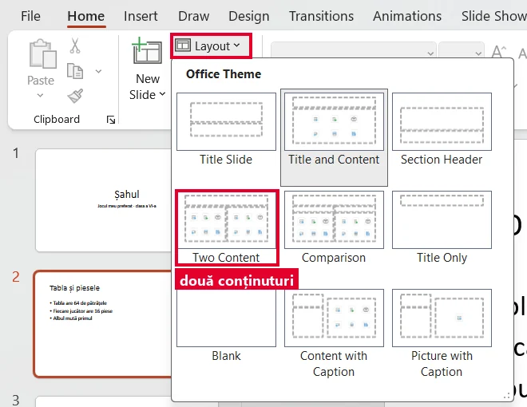

<!doctype html>
<html lang="ro">
<head>
<meta charset="utf-8">
<meta name="viewport" content="width=device-width, initial-scale=1, viewport-fit=cover">
<title>Structura unei prezentări: diapozitive și obiecte</title>
<meta name="description" content="Lecția 4, clasa a VI-a (TIC): ce este un diapozitiv, ce obiecte pui pe el (casete de text, imagini, forme, tabele), substituenții, diapozitivul nou și aspectul lui, structura unei prezentări. Cu PowerPoint simulat în pagină.">
<link rel="preconnect" href="https://fonts.googleapis.com">
<link rel="preconnect" href="https://fonts.gstatic.com" crossorigin>
<link rel="stylesheet" href="https://fonts.googleapis.com/css2?family=Bricolage+Grotesque:opsz,wght@12..96,600..800&family=Lexend:wght@400;500;700&family=JetBrains+Mono:wght@500&display=swap">
<link rel="stylesheet" href="../../../jocuri/_motor/motor.css">
<style>
:root{
  --desk:#F2EEEA; --paper:#FFFFFF; --paper2:#F8F3EF; --line:#E2D6CD;
  --ink:#231A16; --ink2:#62554E; --accent:#A83A1C; --accentInk:#FFFFFF; --sel:#F7DED3;
  --mark:#FFE08A; --markInk:#231A16; --ok:#1E7A4A; --okbg:#E2F3E8; --bad:#B3261E; --badbg:#FBE6E3;
  --fd:"Bricolage Grotesque",Georgia,serif; --fb:"Lexend","Segoe UI",system-ui,sans-serif; --fm:"JetBrains Mono",Consolas,monospace;
}
@media (prefers-color-scheme:dark){:root:not([data-theme="light"]){
  --desk:#17120F; --paper:#211A16; --paper2:#2A221D; --line:#3D322B;
  --ink:#F1E8E2; --ink2:#BCAEA5; --accent:#FF9A74; --accentInk:#17120F; --sel:#4A2A1E;
  --mark:#F2C94C; --markInk:#231A16; --ok:#6FD19A; --okbg:#173226; --bad:#FF8A80; --badbg:#3B1D1B;
}}
:root[data-theme="dark"]{
  --desk:#17120F; --paper:#211A16; --paper2:#2A221D; --line:#3D322B;
  --ink:#F1E8E2; --ink2:#BCAEA5; --accent:#FF9A74; --accentInk:#17120F; --sel:#4A2A1E;
  --mark:#F2C94C; --markInk:#231A16; --ok:#6FD19A; --okbg:#173226; --bad:#FF8A80; --badbg:#3B1D1B;
}
/* banda de sus: un diapozitiv cu obiectele lui (titlu, rânduri, formă, tabel), doar CSS */
.banda{display:flex;gap:8px;padding:6px 12px;min-height:36px;align-items:center}
.banda span{flex:0 0 auto;height:22px;border:1px dashed var(--ink2);border-radius:2px;opacity:.75}
.banda .t{width:70px;border-style:solid;background:linear-gradient(var(--ink2),var(--ink2)) 8px 50%/48px 3px no-repeat}
.banda .r{width:52px;background:linear-gradient(var(--line),var(--line)) 6px 35%/38px 2px no-repeat,linear-gradient(var(--line),var(--line)) 6px 70%/28px 2px no-repeat}
.banda .f{width:22px;border:0;background:var(--accent);clip-path:polygon(0 30%,60% 30%,60% 0,100% 50%,60% 100%,60% 70%,0 70%);opacity:.9}
.banda .g{width:34px;border-style:solid;background:linear-gradient(90deg,transparent 48%,var(--ink2) 48% 52%,transparent 52%),linear-gradient(transparent 48%,var(--ink2) 48% 52%,transparent 52%)}
.banda .o{width:22px;border-radius:50%;border-style:solid;background:var(--mark)}
h1{font-size:clamp(1.7rem,7vw,3rem);font-weight:800;letter-spacing:-.01em}
h1 .acc{color:var(--accent)}
h2{font-weight:750}
.nevoie{border-left:4px solid var(--accent);padding:6px 10px;background:var(--paper2);border-radius:0 6px 6px 0}
figure.captura.ingusta img{max-width:190px}
.reading ol.pasi4 li{margin:.2em 0}
.atentie-cuv{border:1px solid var(--line);background:var(--paper2);border-radius:6px;padding:6px 10px}

/* ---------- simulatorul PowerPoint al lecției (culori fixe: arată ca aplicația, în orice temă) ---------- */
.sp-root{max-width:760px;margin:0 auto}
.sp{--paper:#FFFFFF;--paper2:#F3F3F3;--ink:#222222;--ink2:#5A5A5A;--line:#D4D4D4;--sel:#FBE3DB;--xlg:#B7472A;
  border:1px solid #AEB8BB;border-radius:6px;overflow:hidden;background:#F3F3F3;color:#222;font:13px/1.3 "Segoe UI",system-ui,sans-serif;text-align:left}
.sp button{font:inherit;color:inherit;cursor:pointer;margin:0}
.sp-bar{background:#B7472A;color:#fff;padding:4px 8px;font-size:12px;overflow-wrap:anywhere}
.sp .rb.pg{background:#fff}
/* înălțimea butoanelor mari din panglică (Table, Pictures: 96 px în dump × 0,667); dump-ul dă New Slide mai înalt
   decât grupul, iar partea de jos ar sta sub eticheta grupului „Slides” (nu s-ar putea apăsa) */
.sp-split{display:flex;flex-direction:column;width:100%;height:62px;max-height:100%;align-self:flex-start}
.sp-split button{border:1px solid transparent;background:none;border-radius:3px;padding:0;display:flex;align-items:center;justify-content:center;min-height:0}
.sp-split button:hover,.sp-split button:focus-visible{border-color:#B7472A;background:#FBE3DB}
.sp-split-a{flex:0 0 52%}
.sp-split-a svg{width:24px;height:24px;fill:currentColor}
.sp-split-b{flex:1 1 auto;font-size:.68rem;line-height:1.05;text-align:center}
.sp-simple{display:flex;flex-wrap:wrap;gap:4px;padding:6px;background:#fff;border-bottom:1px solid #D0D0D0}
.sp-simple .tabs{display:flex;gap:2px;width:100%}
.sp-sb{border:1px solid #D2D2D2;background:#FAFAFA;border-radius:3px;padding:5px 8px}
.sp-menu{background:#fff;border:1px solid #9E9E9E;margin:6px;box-shadow:0 2px 8px rgba(0,0,0,.18);padding:4px 6px 8px}
.sp-mt{display:flex;justify-content:space-between;align-items:center;gap:8px;font-weight:700;padding:3px 4px;background:#F0F0F0;margin-bottom:6px}
.sp-x{border:0;background:none;font-size:18px;line-height:1;padding:0 6px}
.sp-gal{display:grid;grid-template-columns:repeat(auto-fill,minmax(94px,1fr));gap:6px}
.sp-tile{border:1px solid #D0D0D0;background:#fff;border-radius:3px;padding:4px;display:flex;flex-direction:column;gap:3px;text-align:center;font-size:11px;line-height:1.15}
.sp-tile:hover,.sp-tile:focus-visible{border-color:#B7472A;background:#FBE3DB}
.sp-lt{position:relative;display:block;aspect-ratio:16/9;border:1px solid #BDBDBD;background:#fff}
.sp-lt i{position:absolute;border:1px dashed #9A9A9A;box-sizing:border-box}
.sp-mi{display:block;width:100%;text-align:left;border:0;background:none;padding:6px 8px;border-radius:3px}
.sp-mi:hover,.sp-mi:focus-visible{background:#FBE3DB}
.sp-mi.gri{color:#8A8A8A}
.sp-grid{display:grid;grid-template-columns:repeat(10,20px);gap:2px;margin:4px 0 8px}
.sp-cel{width:20px;height:17px;border:1px solid #BDBDBD;background:#fff;padding:0;border-radius:1px}
.sp-cel.on{background:#F4B9A6;border-color:#B7472A}
.sp-gr{font-weight:700;font-size:12px;padding:4px 2px 2px;color:#444}
.sp-shp{display:flex;flex-wrap:wrap;gap:6px}
.sp-shp button{border:1px solid #E0E0E0;background:#fff;border-radius:3px;padding:4px;width:84px;display:flex;flex-direction:column;align-items:center;gap:2px;font-size:10.5px;line-height:1.1}
.sp-shp button:hover,.sp-shp button:focus-visible{border-color:#B7472A;background:#FBE3DB}
.sp-shp svg{width:30px;height:22px}
.sp-dlg{background:#fff;border:1px solid #7A7A7A;margin:6px;box-shadow:0 3px 12px rgba(0,0,0,.25)}
.sp-dt{border-bottom:1px solid #DDD;padding:6px 8px;font-weight:600;display:flex;justify-content:space-between;align-items:center}
.sp-path{font-size:12px;color:#444;padding:6px 8px;background:#F7F7F7;border-bottom:1px solid #E5E5E5}
.sp-files{display:flex;flex-wrap:wrap;gap:8px;padding:8px}
.sp-file{width:84px;border:1px solid transparent;background:none;border-radius:3px;padding:4px;display:flex;flex-direction:column;align-items:center;gap:3px;font-size:11.5px}
.sp-file svg{width:54px;height:54px}
.sp-file:hover{background:#E5F3FF}
.sp-file.on{background:#CCE8FF;border-color:#99D1FF}
.sp-dfoot{display:flex;flex-wrap:wrap;gap:8px;align-items:center;justify-content:flex-end;padding:8px;border-top:1px solid #E5E5E5}
.sp-dfoot .fn{flex:1 1 150px;font-size:12px;overflow-wrap:anywhere}
.sp-b{border:1px solid #ADADAD;background:#FDFDFD;border-radius:3px;padding:5px 14px}
.sp-b.prim{background:#B7472A;color:#fff;border-color:#B7472A}
.sp-num{display:flex;flex-wrap:wrap;gap:6px 14px;padding:8px 10px}
.sp-num label{display:flex;align-items:center;gap:6px;font-size:12px}
.sp-num input{width:60px;padding:4px;border:1px solid #888;font:inherit;font-size:16px;color:#111;background:#fff}
.sp-main{display:grid;grid-template-columns:64px minmax(0,1fr);gap:6px;padding:6px;background:#E6E6E6}
.sp-thumbs{display:flex;flex-direction:column;gap:6px;min-width:0}
.sp-th{display:flex;gap:3px;border:0;background:none;padding:0;align-items:flex-start;text-align:left;min-width:0}
.sp-th i{font-style:normal;font-size:10px;width:10px;flex:none}
.sp-th.on i{color:#B7472A;font-weight:700}
.sp-mini{flex:1 1 auto;min-width:0;border:1px solid #B5B5B5;background:#fff;display:block}
.sp-th.on .sp-mini{outline:2px solid #B7472A}
.sp-sw{container-type:inline-size;min-width:0;display:block}
.sp-slide{position:relative;aspect-ratio:16/9;background:#fff;color:#000;overflow:hidden;font-family:Calibri,Carlito,"Segoe UI",Arial,sans-serif;line-height:1.12}
.sp-work .sp-slide{box-shadow:0 1px 3px rgba(0,0,0,.35)}
.sp-slide.armat{cursor:crosshair;outline:2px dashed #B7472A;outline-offset:-2px}
.sp-ph,.sp-o{position:absolute;box-sizing:border-box;font-size:calc(var(--pt,18) * 100cqw / 960)}
.sp-ph{padding:0 .25em;display:flex;flex-direction:column;cursor:text}
.sp-vt{justify-content:flex-start}.sp-vm{justify-content:center}.sp-vb{justify-content:flex-end}
.sp-c{text-align:center}
.sp-title,.sp-vtitle{font-family:"Calibri Light",Calibri,Carlito,"Segoe UI",Arial,sans-serif}
.sp-ph.gol{border:1px dashed #A6A6A6}
.sp-prompt{color:#7F7F7F}
.sp-ph ul{margin:0;padding-left:1.05em}
.sp-ph li{margin:.12em 0}
.sp-vbody,.sp-vtitle{writing-mode:vertical-rl}
.sp-icons{position:absolute;left:50%;top:58%;transform:translate(-50%,-50%);display:grid;grid-template-columns:repeat(3,auto);gap:.3em}
.sp .sp-ic{width:max(1.4em,15px);height:max(1.4em,15px);border:0;background:none;padding:0;color:#8A8A8A;display:flex;border-radius:2px}
.sp-ic svg{width:100%;height:100%;fill:currentColor}
.sp .sp-ic:hover,.sp .sp-ic:focus-visible{color:#B7472A;background:#FBE3DB}
.sp-ph.sel,.sp-o.sel{outline:1px solid #6E6E6E}
.sp-h{position:absolute;width:7px;height:7px;border:1px solid #6E6E6E;background:#fff;border-radius:50%;z-index:3;pointer-events:none}
.sp-o{cursor:pointer}
.sp-o-caseta{white-space:pre;padding:.1em .2em;min-width:1.2em;min-height:1.2em;cursor:text}
.sp-o-imagine svg,.sp-o-forma svg{display:block;width:100%;height:100%}
.sp-o-tabel table{width:100%;border-collapse:collapse;table-layout:fixed}
.sp-o-tabel td{border:1px solid #fff;padding:.2em .35em;background:#CFD5EA;height:1.6em;overflow:hidden;white-space:nowrap}
.sp-o-tabel tr:first-child td{background:#4472C4;color:#fff;font-weight:700}
.sp-o-tabel tr:nth-child(odd):not(:first-child) td{background:#E9EBF5}
.sp-in{position:relative;z-index:4;display:block;width:100%;min-width:3em;box-sizing:border-box;font:inherit;font-size:max(16px,1em);line-height:1.2;color:#000;background:#fff;border:1px solid #B7472A;padding:1px 3px;margin:0;resize:none;overflow:hidden}
.sp-content .sp-in,.sp-vbody .sp-in{min-height:4.6em}
.sp-o-caseta .sp-in{width:auto;field-sizing:content}
.sp-ctxnota{flex:1 1 auto;min-width:0;white-space:normal;padding:6px 10px;font-size:12px;line-height:1.35;color:#333;text-align:left}
.sp-ctxnota small{display:block;color:#777}
.sp-tblnota:empty{display:none}
.sp-tblnota{margin:0 0 6px;padding:5px 8px;background:#FFF4CE;border:1px solid #E8C44A;border-radius:3px;font-size:12px;line-height:1.35;max-width:300px}
@media (pointer:coarse){.sp-grid{grid-template-columns:repeat(10,26px)}.sp-cel{width:26px;height:24px}}
.sp-notes{background:#fff;border-top:1px solid #C8C8C8;padding:5px 8px;font-size:12px;color:#8A8A8A;cursor:default}
.sp-status{display:flex;justify-content:space-between;gap:8px;background:#EDEDED;border-top:1px solid #C8C8C8;padding:3px 8px;font-size:11px}
.sp-msg{margin:10px 0 4px;padding:7px 10px;border-radius:6px;background:var(--paper2);border:1px solid var(--line);font-size:.93rem;min-height:1.4em}
.sp-teste{margin:4px 0 8px;padding-left:1.6em}
.sp-teste li{margin:3px 0;color:var(--ink2)}
.sp-teste li.ok{color:var(--ok);font-weight:600}
.sp-teste li.ok::marker{content:"✓  "}
.sp-unelte{display:flex;flex-wrap:wrap;gap:8px}
@media (max-width:560px){
  .sp-main{grid-template-columns:minmax(0,1fr)}
  .sp-thumbs{flex-direction:row;overflow-x:auto;padding-bottom:3px}
  .sp-th{flex:0 0 78px}
}
</style>
</head>
<body>
<script src="../../../jocuri/_motor/motor.js"></script>
<script src="../../../jocuri/_motor/ui-panglica.js"></script>
<script src="../../../jocuri/_motor/panglica-powerpoint.js"></script>
<script>
/* ======================================================================================================
   SimPPT — PowerPoint simulat pentru lecția „Structura unei prezentări: diapozitive și obiecte” (VI, M1, L4).
   Fidelitate (jocuri/README.md §1):
   - machetele (aspectele) și substituenții lor au NUMELE și POZIȚIILE citite din PowerPoint-ul instalat
     (COM, 27.09.2026: 11 machete, cu x/y/lățime/înălțime în procente din diapozitiv și mărimea literelor);
   - panglica = cea reală (jocuri/_motor/panglica-powerpoint.js, dump UI Automation); butoanele pe care
     lecția nu le folosește se văd, dar spun pe ecran că nu fac nimic;
   - Diapozitiv nou (New Slide) = buton dublu, ca în aplicație: sus adaugă direct (după diapozitivul ales;
     după un diapozitiv de titlu vine „Title and Content”), jos (▾) deschide lista de aspecte;
   - Tabel (Table) = grilă „coloane x rânduri” + „Insert Table...” (fereastra cu Number of columns / rows);
     Imagini (Pictures) → This Device... → fereastra Insert Picture → Insert; Forme (Shapes) și Casetă text
     (Text Box) = alegi, apoi un clic pe diapozitiv; o casetă de text lăsată goală dispare;
   - în substituentul de conținut, iconițele Insert Table și Pictures merg și ele (alt drum acceptat de aplicație).
   - scrisul: câmp pe mai multe rânduri, ca în PowerPoint: Enter = rând nou; termini cu un clic în afara casetei sau cu Esc;
     câmpul are cel puțin 16 px (sub 16 px, Safari de pe iPhone mărește pagina) și lățimea după text;
   - după o imagine, o formă sau un tabel se deschide singură fila lor (Picture Format / Shape Format / Table Design),
     fără Diapozitiv nou; simulatorul spune pe ecran „dă clic pe fila Home” (CTX, ctxDe, deschideCtx);
   - tastele Ctrl+Z, Ctrl+M, Delete, Esc sunt ascultate pe document (redesenarea pierde focusul), doar dacă ultimul
     clic a fost în simulator; un singur simulator ascultă (window.__simPptOpreste).
   Abateri spuse pe ecran: în celulele tabelului nu se scrie; pe ecran tactil, grila Table cere două atingeri
   (prima arată „3x2 Table”, lângă grilă).
   Verificarea e pe STAREA prezentării (teste numite), nu pe drumul clicurilor: orice drum bun trece.
   Întrebare: {t:'ppt', q, start:{deck,cur}, fisiere?, teste:[{ce, c:[condiții], ajutor?}], rez:[pași], gresit:[pași], rezText, why}
   ====================================================================================================== */
const SimPPT=(function(){
'use strict';
const esc=s=>String(s==null?'':s).replace(/[&<>"]/g,c=>({'&':'&amp;','<':'&lt;','>':'&gt;','"':'&quot;'}[c]));
const strip=s=>String(s).replace(/<[^>]+>/g,'');
const norm=s=>String(s==null?'':s).normalize('NFD').replace(/[̀-ͯ]/g,'').replace(/[„”"“«»]/g,'').replace(/\s+/g,' ').trim().toLowerCase();

/* geometria reală a machetelor (PowerPoint 16.0, tema Office, 16:9), în % din diapozitiv; pt = mărimea literelor */
const T={k:'titlu',tip:'title',x:6.9,y:5.3,w:86.2,h:19.3,pt:44,p:'Click to add title',v:'m'};
const CT=(k,x,y,w,h,pt)=>({k,tip:'content',x,y,w,h,pt:pt||28,p:'Click to add text',v:'t'});
const BD=(k,x,y,w,h,pt,p)=>({k,tip:'body',x,y,w,h,pt:pt||24,p:p||'Click to add text',v:'t'});
const TC=(pt)=>({k:'titlu',tip:'title',x:6.9,y:6.7,w:32.3,h:23.3,pt:pt||32,p:'Click to add title',v:'b'});
const LAY={
  title:{n:'Title Slide',ph:[{k:'titlu',tip:'title',x:12.5,y:16.4,w:75,h:34.8,pt:60,p:'Click to add title',v:'b',al:'c'},BD('sub',12.5,52.5,75,24.1,24,'Click to add subtitle')].map((p,i)=>i===1?Object.assign(p,{al:'c'}):p)},
  tc:{n:'Title and Content',ph:[T,CT('c1',6.9,26.6,86.2,63.4)]},
  sec:{n:'Section Header',ph:[{k:'titlu',tip:'title',x:6.8,y:24.9,w:86.2,h:41.6,pt:60,p:'Click to add title',v:'b'},BD('b1',6.8,66.9,86.2,21.9)]},
  two:{n:'Two Content',ph:[T,CT('c1',6.9,26.6,42.5,63.4),CT('c2',50.6,26.6,42.5,63.4)]},
  comp:{n:'Comparison',ph:[T,BD('b1',6.9,24.5,42.3,12),CT('c1',6.9,36.5,42.3,53.7),BD('b2',50.6,24.5,42.5,12),CT('c2',50.6,36.5,42.5,53.7)]},
  to:{n:'Title Only',ph:[T]},
  blank:{n:'Blank',ph:[]},
  cap:{n:'Content with Caption',ph:[TC(),CT('c1',42.5,14.4,50.6,71.1,32),BD('b1',6.9,30,32.3,55.6,16)]},
  pcap:{n:'Picture with Caption',ph:[TC(),{k:'c1',tip:'pic',x:42.5,y:14.4,w:50.6,h:71.1,pt:32,p:'Click icon to add picture',v:'t'},BD('b1',6.9,30,32.3,55.6,16)]},
  vt:{n:'Title and Vertical Text',ph:[T,{k:'c1',tip:'vbody',x:6.9,y:26.6,w:86.2,h:63.4,pt:28,p:'Click to add text',v:'t'}]},
  vtt:{n:'Vertical Title and Text',ph:[{k:'titlu',tip:'vtitle',x:71.6,y:5.3,w:21.6,h:84.7,pt:44,p:'Click to add title',v:'t'},{k:'c1',tip:'vbody',x:6.9,y:5.3,w:63.4,h:84.7,pt:28,p:'Click to add text',v:'t'}]}
};
const ORD=['title','tc','sec','two','comp','to','blank','cap','pcap','vt','vtt'];

/* „fișierele” din folderul Imagini al calculatorului simulat (desene, nu fotografii) */
const FIS={
  'soare.png':'<svg viewBox="0 0 100 100" aria-hidden="true"><rect width="100" height="100" fill="#10131F"/><g stroke="#F7A600" stroke-width="5" stroke-linecap="round"><path d="M50 8v12M50 80v12M8 50h12M80 50h12M20 20l9 9M71 71l9 9M80 20l-9 9M29 71l-9 9"/></g><circle cx="50" cy="50" r="23" fill="#FFB000"/><circle cx="50" cy="50" r="23" fill="none" stroke="#FF6A00" stroke-width="4"/></svg>',
  'pamant.png':'<svg viewBox="0 0 100 100" aria-hidden="true"><rect width="100" height="100" fill="#0B1026"/><circle cx="50" cy="50" r="34" fill="#2F7BD8"/><path d="M30 36q10-10 20-2t8 14-12 10-14-6zM58 62q8-6 14 0t-2 10-12-2z" fill="#3DAA55"/><circle cx="50" cy="50" r="34" fill="none" stroke="#9CC9FF" stroke-width="2"/></svg>',
  'luna.png':'<svg viewBox="0 0 100 100" aria-hidden="true"><rect width="100" height="100" fill="#0B0D14"/><circle cx="50" cy="50" r="33" fill="#C9C9C9"/><circle cx="40" cy="40" r="7" fill="#A9A9A9"/><circle cx="60" cy="58" r="9" fill="#ABABAB"/><circle cx="58" cy="34" r="4" fill="#B1B1B1"/></svg>',
  'marte.png':'<svg viewBox="0 0 100 100" aria-hidden="true"><rect width="100" height="100" fill="#0B0D14"/><circle cx="50" cy="50" r="31" fill="#C1440E"/><path d="M30 44q12-6 22 0t18 2" stroke="#8E2F08" stroke-width="5" fill="none"/><circle cx="60" cy="62" r="5" fill="#9A3509"/></svg>'
};
const FORME=[
  ['Rectangles',[['rect','Rectangle'],['rrect','Rectangle: Rounded Corners']]],
  ['Basic Shapes',[['oval','Oval'],['tri','Isosceles Triangle']]],
  ['Block Arrows',[['arrowR','Arrow: Right'],['arrowL','Arrow: Left']]],
  ['Stars and Banners',[['star5','Star: 5 Points']]]
];
const NUME_FORMA={};FORME.forEach(g=>g[1].forEach(([k,n])=>NUME_FORMA[k]=n));
const SVGF={rect:'<rect x="2" y="2" width="96" height="96"/>',rrect:'<rect x="2" y="2" width="96" height="96" rx="16"/>',
  oval:'<ellipse cx="50" cy="50" rx="48" ry="48"/>',tri:'<polygon points="50,2 98,98 2,98"/>',
  arrowR:'<polygon points="2,28 58,28 58,3 98,50 58,97 58,72 2,72"/>',arrowL:'<polygon points="98,28 42,28 42,3 2,50 42,97 42,72 98,72"/>',
  star5:'<polygon points="50,3 61,37 97,37 68,59 79,95 50,73 21,95 32,59 3,37 39,37"/>'};
const forma=(k,cls)=>`<svg viewBox="0 0 100 100" preserveAspectRatio="none" aria-hidden="true"${cls?` class="${cls}"`:''}><g fill="#4472C4" stroke="#2F528F" stroke-width="2" vector-effect="non-scaling-stroke">${SVGF[k]}</g></svg>`;
/* iconițele din substituentul de conținut (doar Insert Table și Pictures fac ceva în lecție) */
const IC={
  tabel:['Insert Table','<svg viewBox="0 0 20 20"><path d="M2 3h16v14H2zm1.5 1.5v3h4v-3zm5.5 0v3h7.5v-3zM3.5 9v2.5h4V9zm5.5 0v2.5h7.5V9zm-5.5 4v2.5h4V13zm5.5 0v2.5h7.5V13z"/></svg>'],
  grafic:['Insert Chart','<svg viewBox="0 0 20 20"><path d="M3 16h14v1.5H3zM4 9h3v6H4zm4.5-4h3v10h-3zM13 7h3v8h-3z"/></svg>'],
  smart:['Insert a SmartArt Graphic','<svg viewBox="0 0 20 20"><path d="M2 4h6v4H2zm10 0h6v4h-6zM7 12h6v4H7zM5 8h1.5v2h7V8H15v3.5H5z"/></svg>'],
  imagine:['Pictures','<svg viewBox="0 0 20 20"><path d="M2 4h16v12H2zm1.5 1.5v7.4l3.8-3.8 3 3 2.2-2.2 4 4V5.5zM13.5 6.5a1.5 1.5 0 1 1 0 3 1.5 1.5 0 0 1 0-3z"/></svg>'],
  video:['Insert Video','<svg viewBox="0 0 20 20"><path d="M2 5h11v10H2zm12 3l4-2.5v9L14 12z"/></svg>'],
  icon:['Insert an Icon','<svg viewBox="0 0 20 20"><path d="M10 2a8 8 0 1 1 0 16 8 8 0 0 1 0-16zm-3 6a1.2 1.2 0 1 0 0 2.4A1.2 1.2 0 0 0 7 8zm6 0a1.2 1.2 0 1 0 0 2.4A1.2 1.2 0 0 0 13 8zm-6.5 4.5q3.5 3 7 0l1 .9q-4.5 4-9 0z"/></svg>']
};
const HANDLES=[[0,0],[50,0],[100,0],[0,50],[100,50],[0,100],[50,100],[100,100]].map(([x,y])=>`<span class="sp-h" style="left:calc(${x}% - 4px);top:calc(${y}% - 4px)"></span>`).join('');

let uid=0;
const diap=(id,lay,t,obj)=>({id,lay,t:t||{},obj:obj||[]});
const DECKS={
  nou:()=>[diap('d1','title')],
  solar:()=>[diap('d1','title',{titlu:'Sistemul solar',sub:'Ana Pop, clasa a VI-a'}),diap('d2','tc',{titlu:'Cuprins',c1:'Soarele\nPlanetele\nCe reținem'}),
    diap('d3','to',{titlu:'Soarele'},[{tip:'caseta',x:4.2,y:27.8,pt:24,txt:'Steaua din centrul\nSistemului solar'},
      {tip:'tabel',x:4.2,y:51.9,w:41.7,h:22.2,c:2,r:3,pt:18,cel:[['Soarele','În cifre'],['Vârsta','cam 4,6 miliarde de ani'],['Până la Pământ','150 milioane km']]},
      {tip:'forma',forma:'arrowR',x:49,y:46.3,w:15.6,h:14.8},{tip:'imagine',fis:'soare.png',x:67.7,y:27.8,w:27.1,h:45.9}])],
  planete:()=>[diap('d1','title',{titlu:'Sistemul solar',sub:'Ana Pop, clasa a VI-a'}),diap('d2','tc',{titlu:'Planetele'}),diap('d3','tc',{titlu:'Luna'})],
  marte:()=>[diap('d1','title',{titlu:'Planetele',sub:'Dan Pop, clasa a VI-a'}),diap('d2','to',{titlu:'Marte'})]
};
function init(Q){
  const st=Q.start||{};
  const slides=(DECKS[st.deck]||DECKS.nou)();
  slides.forEach(s=>s.obj.forEach(o=>o.id='o'+(++uid)));
  return {slides,cur:st.cur||0,tab:'home',menu:null,dlg:null,armed:null,sel:null,edit:null,msg:'',hist:[],vazut:{},tblHover:null};
}
const slideCur=S=>S.slides[S.cur];
const obiect=(S,id)=>{for(const s of S.slides){const o=s.obj.find(x=>x.id===id);if(o)return o}return null};
const phDe=(sl,k)=>LAY[sl.lay].ph.find(p=>p.k===k);
function phGol(sl,k){const p=phDe(sl,k);return p&&(p.tip==='content'||p.tip==='pic')&&!String(sl.t[k]||'').trim()&&!sl.obj.some(o=>o.ph===k)?p:null}
function snap(S){S.hist.push(JSON.stringify({slides:S.slides,cur:S.cur}));if(S.hist.length>80)S.hist.shift()}
function undo(S){const h=S.hist.pop();if(!h){S.msg='Nu mai ai nimic de anulat.';return}const o=JSON.parse(h);S.slides=o.slides;S.cur=Math.min(o.cur,S.slides.length-1);
  S.sel=null;S.edit=null;S.menu=null;S.dlg=null;S.armed=null;S.msg='Ai anulat ultimul pas (Ctrl+Z).'}
function setText(S,v){const E=S.edit;if(!E)return;if(E.kind==='ph')slideCur(S).t[E.key]=v;else{const o=obiect(S,E.id);if(o)o.txt=v}}
function commitEdit(S){
  const E=S.edit;if(!E)return;S.edit=null;
  if(E.kind==='obj'){
    const sl=S.slides.find(s=>s.obj.some(o=>o.id===E.id));if(!sl)return;const o=sl.obj.find(x=>x.id===E.id);
    if(o.tip==='caseta'&&!String(o.txt||'').trim()){sl.obj=sl.obj.filter(x=>x!==o);if(S.sel&&S.sel.id===o.id)S.sel=null;
      S.msg='Caseta de text goală a dispărut: în PowerPoint, o casetă în care n-ai scris nimic dispare când dai clic în altă parte.'}
    else if(o.tip==='caseta')o.txt=String(o.txt).replace(/\s+$/,'');
  }else{const sl=slideCur(S);if(sl&&sl.t[E.key]!=null)sl.t[E.key]=String(sl.t[E.key]).replace(/\s+$/,'')}
}
function adaugaDiap(S,lay){
  const c=slideCur(S),L=lay||(c?(c.lay==='title'?'tc':c.lay):'tc');
  S.slides.splice(S.cur+1,0,{id:'n'+(++uid),nou:true,lay:L,t:{},obj:[]});S.cur++;S.sel=null;
  S.msg=`Diapozitiv nou pe locul ${S.cur+1}, cu aspectul ${LAY[L].n}. Miniatura lui e acum cea aleasă.`;
}
function schimbaAspect(S,k){
  const sl=slideCur(S),noi=LAY[k].ph.map(p=>p.k);
  LAY[sl.lay].ph.forEach(p=>{if(noi.includes(p.k))return;
    const txt=String(sl.t[p.k]||'').trim();
    if(txt)sl.obj.push({id:'o'+(++uid),tip:'caseta',txt:sl.t[p.k],x:p.x,y:p.y,pt:Math.min(p.pt||18,28)});   // textul rămâne pe diapozitiv
    delete sl.t[p.k];sl.obj.forEach(o=>{if(o.ph===p.k)delete o.ph});
  });
  sl.lay=k;S.sel=null;S.msg=`Diapozitivul ${S.cur+1} are acum aspectul ${LAY[k].n}.`;
}
/* FILELE CONTEXTUALE (reparația J03): în PowerPoint, după ce pui o imagine, o formă sau un tabel, sus se deschide
   singură fila lor (Picture Format / Shape Format / Table Design), care NU are Diapozitiv nou. Fila există cât e ales
   obiectul; când nu mai e ales nimic, dispare, iar simulatorul trece pe Home. */
const CTX={picture:[['TabCtxA','Picture Format','Format imagine']],table:[['TabCtxA','Table Design','Proiectare tabel'],['TabCtxB','Layout','Aspect tabel']],shape:[['TabCtxA','Shape Format','Format formă']]};
function ctxDe(S){const o=S.sel&&S.sel.k==='obj'?obiect(S,S.sel.id):null;return o?({imagine:'picture',tabel:'table',forma:'shape',caseta:'shape'}[o.tip]):null}
function deschideCtx(S){const c=ctxDe(S);if(!c)return '';S.tab='ctx';
  return ` Sus s-a deschis singură fila ${CTX[c][0][1]} (${CTX[c][0][2]}), ca în PowerPoint. Pentru Diapozitiv nou revii la fila Home (Pornire).`}
/* un obiect pus de pe panglică intră în primul substituent de conținut gol (NESIGUR: de confirmat cu captura C3) */
function primulGol(sl,tip){return LAY[sl.lay].ph.find(p=>(p.tip==='content'||(p.tip==='pic'&&tip==='imagine'))&&phGol(sl,p.k))||null}
function puneObiect(S,o,phKey){
  const sl=slideCur(S);
  const p=phKey?phGol(sl,phKey):((S.sel&&S.sel.k==='ph'?phGol(sl,S.sel.key):null)||primulGol(sl,o.tip));
  o.id='o'+(++uid);
  if(o.tip==='tabel'){const w=p?p.w:Math.min(86,o.c*14),h=Math.min(p?p.h:84,o.r*7.4);
    Object.assign(o,p?{x:p.x,y:p.y,w,h,ph:p.k}:{x:(100-w)/2,y:Math.max(8,(100-h)/2),w,h,pt:18});o.pt=18}
  else if(o.tip==='imagine'){
    if(p){const lat=Math.min(p.w*9.6,p.h*5.4)*0.9,w=lat/9.6,h=lat/5.4;Object.assign(o,{x:p.x+(p.w-w)/2,y:p.y+(p.h-h)/2,w,h,ph:p.k})}
    else Object.assign(o,{w:28,h:49.8,x:36,y:25})}
  sl.obj.push(o);S.sel={k:'obj',id:o.id};
}
function plaseaza(S,a){
  const sl=slideCur(S),ar=S.armed;S.armed=null;S.menu=null;snap(S);
  const x=Math.max(0,Math.min(a?a.x:40,100)),y=Math.max(0,Math.min(a?a.y:40,100));
  if(ar.tip==='caseta'){const o={id:'o'+(++uid),tip:'caseta',txt:'',x:Math.min(x,88),y:Math.min(y,90),pt:18};sl.obj.push(o);
    S.sel={k:'obj',id:o.id};S.edit={kind:'obj',id:o.id};S.msg='Caseta de text e pusă. Tastează textul, apoi dă clic în afara ei.'}
  else{const w=7.5,h=13.33,o={id:'o'+(++uid),tip:'forma',forma:ar.forma,x:Math.min(x,100-w),y:Math.min(y,100-h),w,h};sl.obj.push(o);
    S.sel={k:'obj',id:o.id};S.msg=`Forma ${NUME_FORMA[ar.forma]} e pe diapozitiv.`+deschideCtx(S)}
}
/* un gest; după el, fila contextuală dispare dacă nu mai e ales obiectul ei */
function act(S,id,arg){
  const r=act0(S,id,arg);
  if((S.tab==='ctx'||S.tab==='ctxb')&&!ctxDe(S))S.tab='home';
  return r;
}
/* arg = {x,y} în % din diapozitiv, pentru clicurile pe diapozitiv */
function act0(S,id,arg){
  S.msg='';if(!id.startsWith('mini-')&&id!=='sterge')S.peMini=false;const E0=S.edit;
  if(id==='undo'){commitEdit(S);S.msg='';return undo(S)}
  const aceeasiEditare=S.edit&&((S.edit.kind==='ph'&&id==='ph:'+S.edit.key)||(S.edit.kind==='obj'&&id==='obj:'+S.edit.id));
  if(S.edit&&!aceeasiEditare)commitEdit(S);
  if(S.dlg)return actDlg(S,id);
  if(id.startsWith('tab-')){S.menu=null;S.armed=null;if(id==='tab-file'){S.msg='Fila File (Fișier) ai folosit-o în lecția 3 (salvare, deschidere). Aici nu ne trebuie.';return}S.tab=id.slice(4);return}
  if(id==='menu-close'){S.menu=null;return}
  if(id==='new-slide'){snap(S);S.menu=null;S.armed=null;return adaugaDiap(S,null)}
  if(id==='new-slide-menu'){S.armed=null;S.menu=S.menu==='newslide'?null:'newslide';return}
  if(id==='layout'){S.armed=null;S.menu=S.menu==='layout'?null:'layout';return}
  if(id.startsWith('lay:')){const k=id.slice(4);snap(S);if(S.menu==='newslide')adaugaDiap(S,k);else schimbaAspect(S,k);S.menu=null;return}
  if(id.startsWith('mini-')){S.cur=Math.min(+id.slice(5)-1,S.slides.length-1);S.sel=null;S.menu=null;S.armed=null;S.peMini=true;return}
  if(id==='ins-table'){S.armed=null;S.menu=S.menu==='table'?null:'table';S.tblHover=null;return}
  if(id.startsWith('tbl:')){const [c,r]=id.slice(4).split('x').map(Number);snap(S);puneObiect(S,{tip:'tabel',c,r,cel:[]});S.menu=null;
    S.msg=`Ai pus un tabel cu ${c} ${c===1?'coloană':'coloane'} și ${r} ${r===1?'rând':'rânduri'}.`+deschideCtx(S);return}
  if(id==='tbl-dlg'){S.menu=null;S.dlg={tip:'tabel',c:5,r:2,ph:null};return}
  if(id==='tbl-draw'||id==='tbl-excel'){S.msg='Acest buton nu e folosit în lecția asta: în simulator nu face nimic.';return}
  if(id==='ins-pictures'){S.armed=null;S.menu=S.menu==='pictures'?null:'pictures';return}
  if(id==='pic-device'){S.menu=null;S.dlg={tip:'fisier',sel:null,ph:null};return}
  if(id==='pic-stock'||id==='pic-online'){S.menu=null;S.msg='Imaginile stoc și cele online vin de pe internet. În simulator folosești imaginile din calculator: This Device... (Acest dispozitiv).';return}
  if(id==='ins-shapes'){S.armed=null;S.menu=S.menu==='shapes'?null:'shapes';return}
  if(id.startsWith('shape:')){S.menu=null;S.armed={tip:'forma',forma:id.slice(6)};S.msg=`Ai ales forma ${NUME_FORMA[id.slice(6)]}. Acum dă un clic pe diapozitiv, acolo unde o vrei.`;return}
  if(id==='ins-textbox'){S.menu=null;S.armed=S.armed&&S.armed.tip==='caseta'?null:{tip:'caseta'};S.msg=S.armed?'Acum dă un clic pe diapozitiv, acolo unde vrei caseta de text.':'';return}
  if(id==='ins-link'||id==='ins-audio'){S.menu=null;S.msg=(id==='ins-link'?'Link (legătura)':'Audio (sunetul)')+' stă tot pe fila Inserare (Insert). Îl vei folosi mai târziu: în simulator nu face nimic.';return}
  if(id==='slide'){if(S.armed)return plaseaza(S,arg);S.sel=null;S.menu=null;return}
  if(id.startsWith('ph:')){const key=id.slice(3);S.menu=null;
    if(!aceeasiEditare){snap(S);S.sel={k:'ph',key};S.edit={kind:'ph',key};S.vazut[key==='titlu'?'titlu':'text']=1}return}
  if(id.startsWith('phic:')){const [,key,ic]=id.split(':');S.menu=null;
    if(ic==='tabel'){S.dlg={tip:'tabel',c:5,r:2,ph:key};return}
    if(ic==='imagine'){S.dlg={tip:'fisier',sel:null,ph:key};return}
    S.msg='Acest buton nu e folosit în lecția asta: în simulator nu face nimic.';return}
  if(id.startsWith('obj:')){const o=obiect(S,id.slice(4));S.menu=null;if(!o)return;
    S.sel={k:'obj',id:o.id};S.vazut[o.tip]=1;
    if(o.tip==='caseta'&&!aceeasiEditare){snap(S);S.edit={kind:'obj',id:o.id}}
    if(o.tip==='tabel')S.msg='Ai ales tabelul: are chenarul lui. (În PowerPoint, ca să scrii într-o celulă, dai clic în ea și tastezi; în simulator nu scriem în tabel.)';
    else if(o.tip==='imagine')S.msg='Ai ales imaginea: doar ea are acum chenar.';
    else if(o.tip==='forma')S.msg='Ai ales forma: doar ea are acum chenar.';
    return}
  if(id==='sterge'){   // tasta Delete, ca în PowerPoint: obiectul ales; altfel diapozitivul ales (dacă ultimul clic a fost pe miniaturi)
    const sl=slideCur(S);
    if(S.sel&&S.sel.k==='obj'){snap(S);sl.obj=sl.obj.filter(o=>o.id!==S.sel.id);S.sel=null;S.msg='Ai șters obiectul ales (tasta Delete).';return}
    if(S.peMini&&S.slides.length>1){snap(S);S.slides.splice(S.cur,1);S.cur=Math.max(0,S.cur-1);S.msg='Ai șters diapozitivul ales (tasta Delete).';return}
    return}
  if(id==='esc'){S.menu=null;S.armed=null;if(!(E0&&E0.kind==='obj'))S.sel=null;return}   // Esc: iese din scris (caseta rămâne aleasă) sau renunță
  if(id==='zona-note'){S.msg='Zona de note (lecția 2) nu ne trebuie aici.';return}
  if(id==='zona-miniaturi'||id==='zona-panglica')return;
}
function actDlg(S,id){
  const D=S.dlg;
  if(D.tip==='fisier'){
    if(id.startsWith('file:')){D.sel=id.slice(5);return}
    if(id==='file-insert'){if(!D.sel){S.msg='Alege întâi un fișier: dă clic pe el.';return}
      snap(S);const ph=D.ph;S.dlg=null;puneObiect(S,{tip:'imagine',fis:D.sel},ph);S.msg=`Imaginea ${D.sel} e acum pe diapozitivul ${S.cur+1}.`+deschideCtx(S);return}
    if(id==='file-cancel'){S.dlg=null;return}
  }else{
    if(id==='tbl-ok'){const c=Math.round(+D.c),r=Math.round(+D.r);
      if(!(c>=1&&c<=75&&r>=1&&r<=75)){S.msg='Numărul de coloane și de rânduri trebuie să fie între 1 și 75.';return}
      snap(S);const ph=D.ph;S.dlg=null;puneObiect(S,{tip:'tabel',c,r,cel:[]},ph);S.msg=`Ai pus un tabel cu ${c} ${c===1?'coloană':'coloane'} și ${r} ${r===1?'rând':'rânduri'}.`+deschideCtx(S);return}
    if(id==='tbl-cancel'){S.dlg=null;return}
  }
  if(id==='esc'){S.dlg=null;return}
  S.msg='Fereastra e deschisă: termin-o întâi, cu butoanele de jos.';
}

/* ---------------- desenarea ---------------- */
function phHTML(S,sl,p,mod){
  if(sl.obj.some(o=>o.ph===p.k))return '';
  const txt=String(sl.t[p.k]||''),gol=!txt.trim();
  const ed=mod==='edit'&&S.edit&&S.edit.kind==='ph'&&S.edit.key===p.k;
  if(mod!=='edit'&&gol)return '';   // miniaturile și expunerea nu arată locurile goale
  const sel=mod==='edit'&&(ed||(S.sel&&S.sel.k==='ph'&&S.sel.key===p.k));
  const multi=p.tip==='content'||p.tip==='vbody';
  let inner;
  if(ed)inner=`<textarea class="sp-in" data-edit="1" rows="${multi?4:Math.max(1,txt.split('\n').length)}" spellcheck="false" aria-label="Textul din substituent (Enter = rând nou)">${esc(txt)}</textarea>`;
  else if(!gol)inner=multi?`<ul>${txt.split('\n').filter(x=>x.trim()).map(l=>`<li>${esc(l)}</li>`).join('')}</ul>`:esc(txt).replace(/\n/g,'<br>');
  else inner=`<span class="sp-prompt">${multi?'• ':''}${esc(p.p)}</span>`+
    (p.tip==='content'?`<span class="sp-icons">${Object.entries(IC).map(([k,[n,s]])=>`<button type="button" class="sp-ic" data-t="phic:${p.k}:${k}" title="${n}" aria-label="${n}">${s}</button>`).join('')}</span>`:'')+
    (p.tip==='pic'?`<span class="sp-icons" style="grid-template-columns:auto"><button type="button" class="sp-ic" data-t="phic:${p.k}:imagine" title="Pictures" aria-label="Pictures">${IC.imagine[1]}</button></span>`:'');
  return `<div class="sp-ph sp-${p.tip} sp-v${p.v||'t'}${p.al==='c'?' sp-c':''}${gol&&!ed?' gol':''}${sel?' sel':''}" style="left:${p.x}%;top:${p.y}%;width:${p.w}%;height:${p.h}%;--pt:${p.pt||24}"${mod==='edit'?` data-t="ph:${p.k}"`:''}>${inner}${sel?HANDLES:''}</div>`;
}
function objHTML(S,o,mod){
  const ed=mod==='edit'&&S.edit&&S.edit.kind==='obj'&&S.edit.id===o.id;
  if(o.tip==='caseta'&&mod!=='edit'&&!String(o.txt||'').trim())return '';
  const sel=mod==='edit'&&S.sel&&S.sel.k==='obj'&&S.sel.id===o.id;
  const pos=`left:${o.x}%;top:${o.y}%;`+(o.tip==='caseta'?'':`width:${o.w}%;height:${o.h}%;`)+`--pt:${o.pt||18}`;
  let inner='';
  if(o.tip==='caseta')inner=ed?`<textarea class="sp-in" data-edit="1" rows="${Math.max(1,String(o.txt||'').split('\n').length)}" cols="${Math.max(3,...String(o.txt||'').split('\n').map(l=>l.length+1))}" spellcheck="false" aria-label="Textul din caseta de text (Enter = rând nou)">${esc(o.txt||'')}</textarea>`:esc(o.txt||'').replace(/\n/g,'<br>');
  else if(o.tip==='imagine')inner=FIS[o.fis]||'';
  else if(o.tip==='forma')inner=forma(o.forma);
  else if(o.tip==='tabel'){const cel=o.cel||[];inner=`<table>${Array.from({length:o.r},(_,a)=>`<tr>${Array.from({length:o.c},(_,b)=>`<td>${esc((cel[a]||[])[b]||'')}</td>`).join('')}</tr>`).join('')}</table>`}
  const nume={caseta:'caseta de text',imagine:'imaginea '+(o.fis||''),forma:'forma '+(NUME_FORMA[o.forma]||''),tabel:`tabelul cu ${o.c} coloane și ${o.r} rânduri`}[o.tip];
  return `<div class="sp-o sp-o-${o.tip}${sel?' sel':''}" style="${pos}"${mod==='edit'?` data-t="obj:${o.id}" role="button" tabindex="0" aria-label="${esc(nume)}"`:''}>${inner}${sel?HANDLES:''}</div>`;
}
function slideHTML(S,sl,mod){
  return `<div class="sp-slide${mod==='edit'&&S.armed?' armat':''}"${mod==='edit'?' data-t="slide"':''}>${LAY[sl.lay].ph.map(p=>phHTML(S,sl,p,mod)).join('')}${sl.obj.map(o=>objHTML(S,o,mod)).join('')}</div>`;
}
const tileLay=k=>`<button type="button" class="sp-tile" data-t="lay:${k}"><span class="sp-lt">${LAY[k].ph.map(p=>`<i style="left:${p.x}%;top:${p.y}%;width:${p.w}%;height:${p.h}%"></i>`).join('')}</span>${LAY[k].n}</button>`;
function menuHTML(S){
  const cap=(t)=>`<div class="sp-mt"><span>${t}</span><button type="button" class="sp-x" data-t="menu-close" aria-label="Închide lista">×</button></div>`;
  if(S.menu==='layout')return `<div class="sp-menu" role="menu">${cap('Layout · Office Theme')}<div class="sp-gal">${ORD.map(tileLay).join('')}</div></div>`;
  if(S.menu==='newslide')return `<div class="sp-menu" role="menu">${cap('New Slide · Office Theme')}<div class="sp-gal">${ORD.map(tileLay).join('')}</div>
    <button type="button" class="sp-mi gri" data-t="nesim-dup">Duplicate Selected Slides</button><button type="button" class="sp-mi gri" data-t="nesim-outline">Slides from Outline...</button><button type="button" class="sp-mi gri" data-t="nesim-reuse">Reuse Slides...</button></div>`;
  if(S.menu==='table'){const h=S.tblHover;return `<div class="sp-menu" role="menu">${cap(`<span class="sp-tblh">${h?h+' Table':'Insert Table'}</span>`)}
    <div class="sp-grid">${Array.from({length:8},(_,r)=>Array.from({length:10},(_,c)=>`<button type="button" class="sp-cel" data-t="tbl:${c+1}x${r+1}" aria-label="${c+1} coloane, ${r+1} rânduri"></button>`).join('')).join('')}</div>
    <div class="sp-tblnota" aria-live="polite"></div><button type="button" class="sp-mi" data-t="tbl-dlg">Insert Table...</button><button type="button" class="sp-mi gri" data-t="tbl-draw">Draw Table</button><button type="button" class="sp-mi gri" data-t="tbl-excel">Excel Spreadsheet</button></div>`}
  if(S.menu==='pictures')return `<div class="sp-menu" role="menu">${cap('Insert Picture From')}<button type="button" class="sp-mi" data-t="pic-device">This Device...</button><button type="button" class="sp-mi" data-t="pic-stock">Stock Images...</button><button type="button" class="sp-mi" data-t="pic-online">Online Pictures...</button></div>`;
  if(S.menu==='shapes')return `<div class="sp-menu" role="menu">${cap('Shapes')}${FORME.map(([g,it])=>`<div class="sp-gr">${g}</div><div class="sp-shp">${it.map(([k,n])=>`<button type="button" data-t="shape:${k}" title="${n}">${forma(k)}<span>${n}</span></button>`).join('')}</div>`).join('')}
    <p style="margin:6px 2px 0;font-size:11px;color:#666">În PowerPoint vezi doar desenele; numele apare când ții mouse-ul pe formă.</p></div>`;
  return '';
}
function dlgHTML(S,Q){
  const D=S.dlg;if(!D)return '';
  if(D.tip==='fisier'){const L=Q.fisiere||Object.keys(FIS);
    return `<div class="sp-dlg" role="dialog" aria-label="Insert Picture"><div class="sp-dt"><span>Insert Picture</span><button type="button" class="sp-x" data-t="file-cancel" aria-label="Închide fereastra">×</button></div>
    <div class="sp-path">This PC › Pictures (Imagini)</div><div class="sp-files">${L.map(f=>`<button type="button" class="sp-file${D.sel===f?' on':''}" data-t="file:${f}">${FIS[f]}<span>${f}</span></button>`).join('')}</div>
    <div class="sp-dfoot"><span class="fn">File name: <b>${esc(D.sel||'')}</b></span><button type="button" class="sp-b prim" data-t="file-insert">Insert</button><button type="button" class="sp-b" data-t="file-cancel">Cancel</button></div></div>`}
  return `<div class="sp-dlg" role="dialog" aria-label="Insert Table"><div class="sp-dt"><span>Insert Table</span><button type="button" class="sp-x" data-t="tbl-cancel" aria-label="Închide fereastra">×</button></div>
    <div class="sp-num"><label>Number of columns: <input type="number" min="1" max="75" data-dlg="c" value="${esc(D.c)}"></label><label>Number of rows: <input type="number" min="1" max="75" data-dlg="r" value="${esc(D.r)}"></label></div>
    <div class="sp-dfoot"><button type="button" class="sp-b prim" data-t="tbl-ok">OK</button><button type="button" class="sp-b" data-t="tbl-cancel">Cancel</button></div></div>`;
}
/* panglica reală (date din PowerPoint-ul instalat); fără date, o panglică simplă */
const LEG={SlideLayoutGallery:['layout','Aspect (Layout)'],TableInsertGallery:['ins-table','Tabel (Table)'],FlyoutAnchorInsertPictures:['ins-pictures','Imagini (Pictures)'],
  ShapesInsertGallery:['ins-shapes','Forme (Shapes)'],TextBoxInsert:['ins-textbox','Casetă text (Text Box)'],'galerie:Text Box':['ins-textbox','Casetă text (Text Box)'],
  'galerie:Rectangle':['shape:rect','Rectangle'],'galerie:Oval':['shape:oval','Oval'],'galerie:Isosceles Triangle':['shape:tri','Isosceles Triangle'],
  'galerie:Rectangle: Rounded Corners':['shape:rrect','Rectangle: Rounded Corners'],HyperlinkInsert:['ins-link','Link'],SoundInsertMenu02:['ins-audio','Audio']};
const DESCHIS={layout:'layout','ins-table':'table','ins-pictures':'pictures','ins-shapes':'shapes'};
function svgIc(cai){return cai?`<svg viewBox="0 0 20 20" aria-hidden="true">${cai.map(d=>`<path d="${d}"/>`).join('')}</svg>`:''}
function panglica(S){
  const P=window.PANGLICA_POWERPOINT,U=window.UiPanglica;
  const split=(ic)=>`<span class="sp-split"><button type="button" class="sp-split-a" data-t="new-slide" title="Diapozitiv nou (New Slide): adaugă un diapozitiv după cel ales" aria-label="New Slide, Diapozitiv nou">${svgIc(ic)||'＋'}</button><button type="button" class="sp-split-b" data-t="new-slide-menu" title="Diapozitiv nou (New Slide): alegi aspectul" aria-label="New Slide, lista de aspecte">New Slide ▾</button></span>`;
  if(!P||!U){
    const tab=S.tab==='insert'?'insert':'home';
    return `<div class="sp-simple"><div class="tabs"><button type="button" class="sp-sb" data-t="tab-home">Home (Pornire)</button><button type="button" class="sp-sb" data-t="tab-insert">Insert (Inserare)</button></div>
      <span style="width:52px;height:64px;display:inline-block">${split(null)}</span>${tab==='home'?'<button type="button" class="sp-sb" data-t="layout">Layout ▾</button>'
      :'<button type="button" class="sp-sb" data-t="ins-table">Table</button><button type="button" class="sp-sb" data-t="ins-pictures">Pictures</button><button type="button" class="sp-sb" data-t="ins-shapes">Shapes</button><button type="button" class="sp-sb" data-t="ins-textbox">Text Box</button>'}</div>`;
  }
  U.stil();
  /* fila contextuală (J03): se adaugă la capătul rândului de file cât e ales obiectul ei; banda ei spune de ce e goală */
  const cx=ctxDe(S),extra=cx?CTX[cx].map(([id,en])=>({id,eticheta:en,grupuri:[]})):[];
  const P2=extra.length?Object.assign({},P,{file:P.file.concat(extra)}):P;
  const TAB={};P2.file.forEach(f=>TAB[f.id]=f.id==='TabCtxA'?'ctx':f.id==='TabCtxB'?'ctxb':f.id.replace(/^Tab/,'').toLowerCase());
  const fila=(P2.file.find(f=>TAB[f.id]===S.tab)||P2.file[0]).id,ic=P.icoane||{},leg={};
  let nota='';
  if(cx&&(S.tab==='ctx'||S.tab==='ctxb')){const [,en,ro]=CTX[cx][S.tab==='ctxb'?1:0];
    nota=`<div class="sp-ctxnota">Fila <b>${en}</b> (${ro}) apare cât e ales ${{picture:'o imagine',table:'un tabel',shape:'o formă sau o casetă'}[cx]}; după ce pui obiectul, se deschide singură. Aici nu e butonul Diapozitiv nou: ca să adaugi un diapozitiv, dă clic pe fila <b>Home</b> (Pornire).<small>În simulator fila asta nu are butoane: în lecția asta nu o folosim.</small></div>`}
  ['SlideNewGallery','SlideNewGalleryInsert'].forEach(k=>leg[k]={html:split(ic[k]||ic.SlideNewGallery),title:'Diapozitiv nou (New Slide)'});
  Object.entries(LEG).forEach(([k,[t,titlu]])=>{
    const on=(DESCHIS[t]&&S.menu===DESCHIS[t])||(t==='ins-textbox'&&S.armed&&S.armed.tip==='caseta')||(t.startsWith('shape:')&&S.armed&&S.armed.forma===t.slice(6));
    leg[k]={attr:`data-t="${t}"`,title:titlu,clasa:on?'pg-on':''}});
  return U.html(P2,{fila,taburi:TAB,legaturi:leg,atribFila:k=>`data-t="tab-${k}"`+(k==='ctx'||k==='ctxb'?' style="color:#B7472A;font-weight:600"':''),
    fisier:'<button type="button" class="pg-fisier" data-t="tab-file">File</button>',bandaInlocuita:nota||undefined});
}
function appHTML(S,Q){
  const sl=slideCur(S);
  const th=S.slides.map((s,k)=>`<button type="button" class="sp-th${k===S.cur?' on':''}" data-t="mini-${k+1}" aria-label="Miniatura diapozitivului ${k+1}${k===S.cur?', aleasă':''}"><i>${k+1}</i><span class="sp-mini"><span class="sp-sw">${slideHTML(S,s,'mini')}</span></span></button>`).join('');
  return `<div class="sp"><div class="sp-bar">Presentation1 - PowerPoint</div><div data-t="zona-panglica">${panglica(S)}</div>${menuHTML(S)}${dlgHTML(S,Q)}
    <div class="sp-main"><div class="sp-thumbs" data-t="zona-miniaturi">${th}</div><div class="sp-work"><div class="sp-sw">${slideHTML(S,sl,'edit')}</div></div></div>
    <div class="sp-notes" data-t="zona-note">Click to add notes</div>
    <div class="sp-status"><span>Slide ${S.cur+1} of ${S.slides.length}</span><span>${S.armed?(S.armed.tip==='caseta'?'Text Box: clic pe diapozitiv':'Shape: clic pe diapozitiv'):LAY[sl.lay].n}</span></div></div>`;
}

/* ---------------- testele (pe starea prezentării) ---------------- */
const D=(S,d)=>S.slides[d-1];
const CHK={
  nr:(S,c)=>S.slides.length===c.n,
  aspect:(S,c)=>!!D(S,c.d)&&D(S,c.d).lay===c.lay,
  text:(S,c)=>!!D(S,c.d)&&norm(D(S,c.d).t[c.ph])===norm(c.val),
  textmin:(S,c)=>!!D(S,c.d)&&norm(D(S,c.d).t[c.ph]).replace(/[^a-z]/g,'').length>=(c.min||3),
  linii:(S,c)=>{const s=D(S,c.d);if(!s)return false;const L=String(s.t[c.ph]||'').split('\n').map(norm).filter(Boolean);let i=0;
    for(const v of c.val){const j=L.indexOf(norm(v),i);if(j<0)return false;i=j+1}return true},
  tabel:(S,c)=>!!D(S,c.d)&&D(S,c.d).obj.some(o=>o.tip==='tabel'&&o.c===c.c&&o.r===c.r),
  imagine:(S,c)=>!!D(S,c.d)&&D(S,c.d).obj.some(o=>o.tip==='imagine'&&o.fis===c.fis),
  forma:(S,c)=>!!D(S,c.d)&&D(S,c.d).obj.some(o=>o.tip==='forma'&&o.forma===c.forma),
  caseta:(S,c)=>!!D(S,c.d)&&D(S,c.d).obj.some(o=>o.tip==='caseta'&&norm(o.txt)===norm(c.val)),
  nou:(S,c)=>{const s=D(S,c.d);return !!s&&!!s.nou&&(!c.dupa||(!!D(S,c.d-1)&&D(S,c.d-1).id===c.dupa))},
  ales:(S,c)=>!!S.vazut[c.o]
};
const trece=(S,t)=>t.c.every(c=>CHK[c.k](S,c));

/* pașii automați (rezolvarea pentru poartă și pentru „Arată-mi răspunsul”) */
function ruleaza(S,pasi){
  for(const a of pasi||[]){
    if(typeof a==='string'){act(S,a);continue}
    if(a.ph){act(S,'ph:'+a.ph);setText(S,a.scrie);commitEdit(S);continue}
    if(a.clic){act(S,'slide',{x:a.clic[0],y:a.clic[1]});continue}
    if('scrie' in a){setText(S,a.scrie);commitEdit(S);continue}
    if(a.alege){const o=slideCur(S).obj.find(x=>x.tip===a.alege);if(o)act(S,'obj:'+o.id);commitEdit(S);continue}
  }
}

function render(Q,body,api){
  let S=init(Q);
  body.innerHTML=`<div class="sp-root"><div class="sp-app"></div><div class="sp-msg" aria-live="polite"></div>
    <div class="lbl">Testele tale (se bifează singure)</div><ol class="sp-teste"></ol>
    <div class="sp-unelte"><button type="button" class="btn ghost sm sp-undo">↶ Anulează ultimul pas (Ctrl+Z)</button><button type="button" class="btn ghost sm sp-reset">Ia-o de la capăt</button></div></div>`;
  const app=body.querySelector('.sp-app'),msg=body.querySelector('.sp-msg'),ol=body.querySelector('.sp-teste');
  function side(){
    ol.innerHTML=Q.teste.map(t=>`<li class="${trece(S,t)?'ok':''}">${t.ce}</li>`).join('');
    msg.innerHTML=S.msg?esc(S.msg):(Q.teste.every(t=>trece(S,t))?'Toate testele sunt bifate. Apasă „Verifică”.':'Lucrează în fereastră; testele se bifează singure când sunt gata.');
  }
  const creste=t=>{t.style.height='auto';t.style.height=t.scrollHeight+'px'};   // câmpul de scris crește cu rândurile
  function draw(){
    app.innerHTML=appHTML(S,Q);side();
    const inp=app.querySelector('.sp-in[data-edit]');
    if(inp&&!api.done()){creste(inp);try{inp.focus({preventScroll:true});const n=inp.value.length;inp.setSelectionRange(n,n)}catch(e){}}
  }
  function gest(id,arg){act(S,id,arg);draw()}
  const atingere=()=>!!(window.matchMedia&&matchMedia('(pointer:coarse)').matches);
  function aratGrila(cc,rr){S.tblHover=`${cc}x${rr}`;
    app.querySelectorAll('.sp-cel').forEach(b=>{const [a,d]=b.dataset.t.slice(4).split('x').map(Number);b.classList.toggle('on',a<=cc&&d<=rr)});
    const h=app.querySelector('.sp-tblh');if(h)h.textContent=`${cc}x${rr} Table`}
  app.addEventListener('click',e=>{
    if(api.done()||e.target.closest('.sp-in')||e.target.closest('[data-dlg]'))return;
    const sl=e.target.closest('.sp-work .sp-slide');
    if(S.armed&&sl){const r=sl.getBoundingClientRect();return gest('slide',{x:(e.clientX-r.left)/r.width*100,y:(e.clientY-r.top)/r.height*100})}
    const el=e.target.closest('[data-t],[data-nesim]');if(!el||!app.contains(el))return;
    if(!el.dataset.t||el.dataset.t.startsWith('nesim-')){commitEdit(S);S.msg=`„${el.getAttribute('aria-label')||el.textContent.trim()||'Butonul'}” nu e folosit în lecția asta: în simulator nu face nimic.`;return draw()}
    const id=el.dataset.t;
    /* J07: alegerea fișierului NU redesenează fereastra (altfel dublul clic nu mai găsește fișierul) */
    if(S.dlg&&id.startsWith('file:')){act(S,id);app.querySelectorAll('.sp-file').forEach(b=>b.classList.toggle('on',b.dataset.t===id));
      const fn=app.querySelector('.sp-dfoot .fn b');if(fn)fn.textContent=S.dlg.sel;side();return}
    /* J09: pe ecran tactil nu există „mergi cu mouse-ul”: prima atingere arată „3x2 Table”, a doua pune tabelul (spus pe ecran) */
    if(id.startsWith('tbl:')&&atingere()&&S.tblHover!==id.slice(4)){const [cc,rr]=id.slice(4).split('x').map(Number);aratGrila(cc,rr);
      S.msg=`Sus scrie acum „${cc}x${rr} Table”: ${cc} ${cc===1?'coloană':'coloane'}, ${rr} ${rr===1?'rând':'rânduri'}. Atinge încă o dată același pătrățel ca să pui tabelul. (Pe calculator, cu mouse-ul, un singur clic.)`;
      const tn=app.querySelector('.sp-tblnota');if(tn)tn.textContent=S.msg;side();return}
    let arg=null;
    if(id==='slide'){const r=el.getBoundingClientRect();arg={x:(e.clientX-r.left)/r.width*100,y:(e.clientY-r.top)/r.height*100}}
    gest(id,arg);
  });
  app.addEventListener('dblclick',e=>{const f=e.target.closest('[data-t^="file:"]');if(!f||api.done()||!S.dlg)return;act(S,f.dataset.t);act(S,'file-insert');draw()});
  app.addEventListener('pointerover',e=>{if(e.pointerType!=='mouse')return;   // pe atingere, „mouseover” vine chiar înaintea atingerii: nu contează ca previzualizare
    const c=e.target.closest('[data-t^="tbl:"]');if(!c||S.menu!=='table')return;
    const [cc,rr]=c.dataset.t.slice(4).split('x').map(Number);aratGrila(cc,rr)});
  app.addEventListener('input',e=>{
    if(e.target.dataset.edit){setText(S,e.target.value);creste(e.target);S.msg='';side();return}
    if(e.target.dataset.dlg&&S.dlg){S.dlg[e.target.dataset.dlg]=e.target.value}
  });
  /* J01: tastele ascultate pe DOCUMENT. Redesenarea șterge butonul apăsat, iar focusul cade pe <body>, deci un
     ascultător pus pe fereastra simulatorului nu mai primea tastele. Tastele contează doar dacă ultimul clic/atingere
     a fost în acest simulator; câmpurile din afara lui (de ex. numele elevului) rămân neatinse. */
  const rad=body.querySelector('.sp-root');let activ=false;
  const laApasare=e=>{activ=rad.isConnected&&rad.contains(e.target)};
  const laTasta=e=>{
    if(!rad.isConnected){opreste();return}
    if(!activ||api.done())return;
    const t=e.target,inSim=rad.contains(t),inCamp=!!(t.closest&&t.closest('.sp-in'));
    if(!inSim&&t.closest&&t.closest('input,textarea,select,[contenteditable="true"]'))return;
    const k=(e.key||'').toLowerCase(),ctrl=e.ctrlKey||e.metaKey;
    if(e.key==='Escape'){e.preventDefault();return gest('esc')}
    if(ctrl&&k==='z'&&!inCamp){e.preventDefault();return gest('undo')}
    if(ctrl&&k==='m'){e.preventDefault();return gest('new-slide')}
    if((e.key==='Delete'||e.key==='Backspace')&&!inCamp&&!(t.closest&&t.closest('[data-dlg]'))){e.preventDefault();return gest('sterge')}
    if((e.key==='Enter'||e.key===' ')&&t.matches&&t.matches('[role="button"][data-t]')&&inSim){e.preventDefault();gest(t.dataset.t)}
  };
  function opreste(){document.removeEventListener('pointerdown',laApasare,true);document.removeEventListener('keydown',laTasta)}
  if(window.__simPptOpreste)window.__simPptOpreste();   // un singur simulator ascultă tastele: cel desenat ultimul
  window.__simPptOpreste=opreste;
  document.addEventListener('pointerdown',laApasare,true);document.addEventListener('keydown',laTasta);
  body.querySelector('.sp-undo').onclick=()=>{if(!api.done())gest('undo')};
  body.querySelector('.sp-reset').onclick=()=>{if(api.done())return;S=init(Q);draw()};
  draw();
  body._sp={rez:()=>{S=init(Q);ruleaza(S,Q.rez);draw()},gresit:()=>{S=init(Q);ruleaza(S,Q.gresit);draw()}};
  const nav=api.checkButton(()=>{
    commitEdit(S);draw();
    const lipsa=Q.teste.find(t=>!trece(S,t));
    if(!lipsa){nav.innerHTML='';api.resolve(true);return}
    api.resolve(false,`Mai ai de făcut: ${strip(lipsa.ce)}.${lipsa.ajutor?' '+lipsa.ajutor:''}`);
    api.revealButton(()=>{S=init(Q);ruleaza(S,Q.rez);draw();nav.innerHTML='';api.giveUp(`am făcut acum pașii în simulator: ${Q.rezText}.`)});
  });
}
function rezolva(Q,body){if(body._sp)body._sp.rez()}
function gresit(Q,body){if(body._sp)body._sp.gresit()}
return {render,rezolva,gresit};
})();

/* ---------------- lecția ---------------- */
const IMG={'obiecte-diapozitiv':[1000,562],'structura-prezentare':[1000,469],'prezentare-la-ora':[960,688],'diapozitiv-nou':[420,960],'tabel-3x2':[1000,353]};
const fig=(f,alt,cap,cls)=>`<figure class="captura${cls?' '+cls:''}"><a href="../m1-l04/img/${f}.webp" target="_blank"></a><figcaption>${cap}</figcaption></figure>`;
const figJoc=`<figure class="captura"><a href="../../../jocuri/prezentari-vi/img/aspect-machete.webp" target="_blank"></a><figcaption>Captură din PowerPoint: Pornire (Home) → <b>Aspect (Layout)</b>. Liniile punctate din desene sunt substituenții. Încadrat: <i>Two Content</i>.</figcaption></figure>`;
const CONT='Structura unei prezentări: diapozitive, obiecte utilizate în prezentări (casete de text, imagini importate, forme, sunete, tabele, legături)';
const SIM_SCURT='<span class="hint" style="display:block;font-weight:400;margin-bottom:4px">PowerPoint simulat: lucrezi cu clicuri, ca în aplicație. Testele de sub fereastră se bifează singure; la final apeși <b>Verifică</b>.</span>';
const SIM_INTRO='<p>Mai jos e un <strong>PowerPoint simulat</strong>, cu panglica adevărată, în engleză. Dacă PowerPoint-ul tău e în română, butoanele au numele românești din pași. Lucrează în fereastră: <strong>testele se bifează singure</strong> când sunt gata, apoi apeși <b>Verifică</b>. Ai greșit? Butonul <b>↶ Anulează ultimul pas</b> sau tastele <kbd>Ctrl</kbd>+<kbd>Z</kbd> desfac ultima acțiune, ca în PowerPoint. Când scrii, <kbd>Enter</kbd> face un rând nou; ca să termini, dai clic în afara casetei. După o imagine, o formă sau un tabel se deschide singură altă filă, ca în PowerPoint: pentru Diapozitiv nou revii la fila Home (Pornire).</p>';

const LECTIA={
 t:'Structura unei prezentări: diapozitive și obiecte',lectii:[4],continuturi:[CONT],final:true,
 obiectiv:'adaugi un diapozitiv nou cu aspectul potrivit, scrii în substituenți, pui pe diapozitiv o casetă de text, un tabel, o imagine și o formă și recunoști titlul, cuprinsul, conținutul și încheierea unei prezentări.',
 pasi:[
  /* ---------- pasul 0: la ce folosește ---------- */
  {t:'La ce folosește',
   text:`<p>Ai văzut deja o prezentare la o oră: pe ecran apare, pe rând, câte un <strong>diapozitiv</strong>. Fiecare diapozitiv e făcut din bucăți: un titlu sus, câteva rânduri scurte, o poză, uneori un tabel sau o săgeată.</p>
<p>Azi afli cum se numesc aceste bucăți, cum le pui singur pe un diapozitiv și în ce ordine vin diapozitivele unei prezentări bune. Așa îți poți face prezentarea pentru orice materie.</p>
${fig('prezentare-la-ora','O oră de clasă: pe ecranul videoproiectorului se vede un diapozitiv cu un titlu sus și câteva rânduri scurte dedesubt; profesorul vorbește, elevii ascultă, cu spatele la aparat','O prezentare adevărată, la o oră: diapozitivul de pe ecran are un <b>titlu</b> sus și <b>rânduri scurte</b> dedesubt. Fotografie: Bureau of Land Management (SUA), domeniu public, Wikimedia Commons.')}
<p class="nevoie"><b>Ai nevoie de:</b> lecția 2 (panglica, filele, panoul cu miniaturi, zona de lucru) și lecția 3 (prezentare nouă, salvare).</p>`},
  /* ---------- pasul 1: obiectele ---------- */
  {t:'Pe diapozitiv așezi obiecte',
   text:`<p>Tot ce pui pe un diapozitiv este un <mark>obiect</mark>: o bucată separată, cu chenarul ei. Când dai clic pe un obiect, îi vezi chenarul.</p>
<ul><li><mark>caseta de text</mark>: un chenar în care scrii; și titlul stă într-o casetă;</li>
<li><strong>imaginea</strong>: o poză luată dintr-un fișier de pe calculator („imagine importată”);</li>
<li><strong>forma</strong>: un desen gata făcut: dreptunghi, cerc, săgeată, stea;</li>
<li><strong>tabelul</strong>: căsuțe așezate pe rânduri și coloane, ca orarul;</li>
<li><strong>sunetul</strong> (muzică, o voce) și <strong>legătura</strong> (link: un text pe care apeși ca să se deschidă o pagină de internet).</li></ul>
<p>Sunetul și legătura le vei pune într-o lecție următoare; azi doar le recunoști.</p>
${fig('obiecte-diapozitiv','Un diapozitiv PowerPoint despre Soare, cu cinci obiecte încadrate cu roșu și numite: caseta de titlu Soarele, caseta de text cu două rânduri, tabelul cu cifre despre Soare, forma săgeată și imaginea Soarelui','Un diapozitiv din PowerPoint, cu cinci obiecte încadrate: <b>caseta de titlu</b>, <b>caseta de text</b>, <b>tabelul</b>, <b>forma</b> (săgeata) și <b>imaginea</b>. Imaginea Soarelui: NASA/SDO, domeniu public.')}`,
   exemplu:`<p>Diapozitivul „Soarele” de mai sus are cinci obiecte:</p><ol><li>caseta de titlu: „Soarele”;</li><li>caseta de text cu două rânduri;</li><li>tabelul cu două cifre despre Soare: vârsta lui și cât de departe e de Pământ;</li><li>forma: o săgeată;</li><li>imaginea Soarelui, dintr-un fișier.</li></ol><p>Fiecare e separat: dacă dai clic pe imagine, primește chenar doar imaginea, nu și textul.</p>`,
   altfel:`<p>Gândește-te la un panou din clasă: pe carton lipești un titlu decupat, o poză, un desen, un tabel. Cartonul e diapozitivul, iar fiecare bucată lipită e un obiect. O poți lua pe fiecare separat.</p>`,
   incearca:{t:'classify',q:'Vrei să pui pe diapozitive lucrurile de mai jos. Ce fel de obiect este fiecare?',cats:['Casetă de text','Imagine','Formă','Tabel'],
     items:[['Poza cu clasa ta, salvată pe calculator',1],['Orarul pe zile și pe ore',3],['O stea galbenă gata făcută, din PowerPoint (nu desenată de tine)',2],['Titlul „Excursia la munte”',0],['O săgeată care arată spre poză',2],['Rândul „Am plecat luni, ne-am întors joi.”',0]],
     ajutor:'Întreabă-te: e text pe care îl scrii? o poză dintr-un fișier? un desen gata făcut? căsuțe pe rânduri și coloane?',
     why:'Textul scris stă în casete de text, poza dintr-un fișier e o imagine, desenele gata făcute (stea, săgeată) sunt forme, iar ce are rânduri și coloane (orarul) e un tabel.'},
   inca:[
    {t:'ppt',q:SIM_SCURT+'Diapozitivul 3 („Soarele”) are cinci obiecte. Dă clic pe fiecare dintre cele de mai jos și uită-te cum apare chenarul lui.',start:{deck:'solar',cur:2},
     teste:[{ce:'Dă clic pe <b>imagine</b> (Soarele)',c:[{k:'ales',o:'imagine'}]},{ce:'Dă clic pe <b>formă</b> (săgeata)',c:[{k:'ales',o:'forma'}]},
       {ce:'Dă clic pe <b>tabel</b>',c:[{k:'ales',o:'tabel'}]},{ce:'Dă clic pe <b>caseta de text</b> „Steaua din centrul…”',c:[{k:'ales',o:'caseta'}]}],
     rez:[{alege:'imagine'},{alege:'forma'},{alege:'tabel'},{alege:'caseta'}],gresit:[{alege:'imagine'}],
     rezText:'clic pe imagine, pe săgeată, pe tabel și pe caseta de text, pe rând',ajutor:'Obiectele sunt pe diapozitivul mare, în zona de lucru.',
     why:'Fiecare obiect și-a primit chenarul lui când ai dat clic pe el: sunt bucăți separate.'},
    {t:'choice',q:'Pe un diapozitiv sunt: titlul, o poză și un tabel. Câte obiecte are diapozitivul?',o:['3','1','2','4'],ok:0,ajutor:'Și titlul stă într-o casetă, deci e tot un obiect.',
     why:'Trei: caseta de titlu, imaginea și tabelul. Fiecare are chenarul lui.'}
   ]},
  /* ---------- pasul 2: substituenții ---------- */
  {t:'Substituenții: locuri pregătite',
   text:`<p>Într-o prezentare nouă, primul diapozitiv are deja două chenare punctate, cu un text gri: <i>Click to add title</i> (clic ca să adaugi titlul) și <i>Click to add subtitle</i> (pentru subtitlu: un rând mai mic, sub titlu). Ele se numesc <mark>substituenți</mark> (în engleză <i>placeholders</i>): locuri pregătite pentru obiecte.</p>
<p>Ca să scrii într-un substituent, <strong>dai clic în el</strong> și <strong>tastezi</strong>; textul gri dispare. Când ai terminat, dai clic pe o parte goală a diapozitivului.</p>
<p>Textul gri e doar un îndemn: dacă nu scrii nimic, el nu apare când prezinți pe tot ecranul.</p>`,
   exemplu:`<p>Ana începe prezentarea „Vulcanii”:</p><ol><li>dă clic pe <i>Click to add title</i> și tastează <b>Vulcanii</b>;</li><li>dă clic pe <i>Click to add subtitle</i> și tastează <b>Ana Pop, clasa a VI-a</b>;</li><li>dă clic pe o parte goală: chenarele punctate nu se mai văd, rămâne doar textul.</li></ol><p>Pe alte diapozitive vei vedea și un substituent mare, <i>Click to add text</i>: acolo fiecare rând nou îl începi cu tasta <kbd>Enter</kbd>.</p>`,
   altfel:`<p>E ca un formular tipărit: „Nume: ______”. Linia goală îți arată unde scrii. Dacă nu completezi, pe foaie rămâne doar spațiul gol, nu apare nimic în plus.</p>`,
   incearca:{t:'ppt',q:SIM_SCURT+'Prezentarea nouă a Anei are un singur diapozitiv. Scrie titlul <b>Vulcanii</b>, iar în subtitlu scrie numele tău.',start:{deck:'nou'},
     teste:[{ce:'Titlul diapozitivului 1 este <b>Vulcanii</b>',c:[{k:'text',d:1,ph:'titlu',val:'Vulcanii'}],ajutor:'Dă clic pe „Click to add title”, apoi tastează.'},
       {ce:'În subtitlu e numele tău (cel puțin 3 litere)',c:[{k:'textmin',d:1,ph:'sub',min:3}],ajutor:'Dă clic pe „Click to add subtitle”, apoi tastează numele.'}],
     rez:[{ph:'titlu',scrie:'Vulcanii'},{ph:'sub',scrie:'Ana Pop'}],gresit:[{ph:'sub',scrie:'Vulcanii'}],
     rezText:'clic pe „Click to add title” → Vulcanii; clic pe „Click to add subtitle” → numele',ajutor:'Titlul merge în chenarul de sus, numele în cel de jos.',
     why:'Ai scris în substituenți exact ca în PowerPoint: clic în chenar, apoi tastezi.'},
   inca:[
    {t:'choice',q:'Ai uitat să scrii ceva în substituentul <i>Click to add subtitle</i>. Ce vede publicul în locul lui, când pornești prezentarea pe tot ecranul?',
     o:['Nimic, locul rămâne gol','Textul gri „Click to add subtitle”','Un chenar punctat, gol','Un mesaj de eroare'],ok:0,ajutor:'Textul gri e doar un îndemn pentru cel care face prezentarea.',
     why:'Substituentul gol nu se vede la prezentare: nici textul gri, nici chenarul punctat. Le vezi doar tu, cât lucrezi.'}
   ]},
  /* ---------- pasul 3: diapozitiv nou și aspect ---------- */
  {t:'Diapozitiv nou și aspectul lui',
   text:`<p>Un diapozitiv nou îl adaugi de pe fila <strong>Pornire (Home)</strong>, cu butonul <strong>Diapozitiv nou (New Slide)</strong>. El apare imediat <strong>după diapozitivul ales</strong> (cel cu chenar colorat în panoul cu miniaturi) și devine el cel ales.</p>
<p>Fiecare diapozitiv are un <mark>aspect</mark> (Layout): felul în care sunt așezați substituenții pe el. Îl schimbi din Pornire (Home) → <strong>Aspect (Layout)</strong>: se deschide o listă cu desene și alegi desenul potrivit.</p>
<p class="atentie-cuv"><b>Atenție la cuvânt:</b> pe Proiectare (Design) schimbi cum arată toată prezentarea (culori, fundal). Aspectul (Layout) de aici e altceva: unde stau substituenții pe un diapozitiv.</p>
${fig('diapozitiv-nou','Colțul din stânga sus al PowerPoint: fila Home, grupul Clipboard și butonul New Slide încadrat cu roșu; dedesubt, miniaturile 1 și 2, cu miniatura 2 aleasă (chenar portocaliu)','Pornire (Home) → <b>Diapozitiv nou (New Slide)</b>, încadrat. Aici e ales diapozitivul 2 (chenar colorat), deci cel nou va apărea pe locul 3.','ingusta')}`,
   exemplu:`${figJoc}<p>Patru aspecte îți ajung azi:</p><ul>
<li><i>Title Slide</i> (diapozitiv de titlu): titlu mare și subtitlu;</li>
<li><i>Title and Content</i> (Titlu și conținut): titlu și un loc mare pentru text sau pentru un obiect;</li>
<li><i>Two Content</i> (două conținuturi): titlu și două locuri alăturate;</li>
<li><i>Title Only</i> (doar titlu).</li></ul>
<p>Mai sunt și altele, de exemplu <i>Comparison</i> (ca <i>Two Content</i>, cu câte un titlu mic deasupra fiecărei părți) și <i>Blank</i> (gol, fără niciun substituent). Pe Office în română, numele sunt în română, dar desenele sunt aceleași: alegi după desen. Scurtătură: săgeata ▾ de sub <b>Diapozitiv nou</b> adaugă direct un diapozitiv cu aspectul ales.</p>`,
   incearca:{t:'ppt',q:SIM_SCURT+'Adaugă un diapozitiv nou <b>după diapozitivul 2</b> („Cuprins”) și dă-i aspectul <b>Two Content</b>.',start:{deck:'solar',cur:0},
     teste:[{ce:'Prezentarea are 4 diapozitive',c:[{k:'nr',n:4}],ajutor:'Adaugă un singur diapozitiv nou. Ai pus prea multe? Folosește „↶ Anulează ultimul pas”.'},
       {ce:'Diapozitivul nou e pe locul 3, după „Cuprins”',c:[{k:'nou',d:3,dupa:'d2'}],ajutor:'Dă întâi clic pe miniatura 2 („Cuprins”), apoi pe Diapozitiv nou (New Slide).'},
       {ce:'Diapozitivul 3 are aspectul <b>Two Content</b>',c:[{k:'aspect',d:3,lay:'two'}],ajutor:'Pornire (Home) → Aspect (Layout) → desenul Two Content.'}],
     rez:['mini-2','new-slide','layout','lay:two'],gresit:['new-slide','layout','lay:two'],
     rezText:'clic pe miniatura 2 → Diapozitiv nou (New Slide) → Aspect (Layout) → Two Content',ajutor:'Diapozitivul nou apare după cel ales. Pe care trebuie să-l alegi întâi?',
     why:'Diapozitivul nou a apărut după cel ales, iar aspectul l-ai schimbat din Pornire (Home) → Aspect (Layout).'},
   inca:[
    {t:'choice',q:'Prezentarea are 5 diapozitive. Dai clic pe miniatura 2, apoi apeși <b>de două ori</b> Diapozitiv nou (New Slide). Pe ce locuri sunt diapozitivele noi?',
     o:['Pe locurile 3 și 4','Pe locurile 6 și 7, la sfârșit','Pe locurile 1 și 2, la început','Amândouă pe locul 3'],ok:0,ajutor:'Cel nou apare după cel ales și devine el cel ales. Unde apare al doilea?',
     why:'Primul apare după 2, adică pe locul 3, și devine cel ales. Al doilea apare după el, pe locul 4. Prezentarea are acum 7 diapozitive.'},
    {t:'choice',q:'Vrei un ultim diapozitiv pe care să scrie doar, mare, „Întrebări?”, fără alt loc pregătit. Ce aspect alegi?',o:['Title Only','Title and Content','Two Content','Comparison'],ok:0,
     ajutor:'Care aspect are doar un loc pentru titlu?',why:'Title Only (doar titlu) are un singur substituent, pentru titlu. Celelalte au și locuri pentru conținut.'}
   ]},
  /* ---------- pasul 4: obiectele de pe Inserare ---------- */
  {t:'Pui obiecte de pe fila Inserare (Insert)',
   text:`<p>Obiectele noi le iei de pe fila <strong>Inserare (Insert)</strong>. Întâi alegi diapozitivul din miniaturi, apoi:</p>
<ul><li><strong>Casetă text (Text Box)</strong>: apeși butonul, dai un clic pe diapozitiv și tastezi.</li>
<li><strong>Forme (Shapes)</strong>: alegi forma, apoi dai un clic pe diapozitiv.</li>
<li><strong>Tabel (Table)</strong>: în grila care se deschide alegi câte coloane și câte rânduri vrei (vezi „Uite cum”).</li>
<li><strong>Imagini (Pictures)</strong> → <strong>Acest dispozitiv (This Device)</strong>: alegi fișierul și apeși <strong>Inserare (Insert)</strong>.</li></ul>
<p>După o imagine, o formă sau un tabel, sus se deschide singură fila lor: Format imagine (Picture Format), Format formă (Shape Format), Proiectare tabel (Table Design). Pentru un diapozitiv nou, revii la <strong>Pornire (Home)</strong>.</p>`,
   exemplu:`<p><b>Caseta și forma.</b> Inserare (Insert) → Casetă text (Text Box) → un clic sub subtitlu → tastezi „Proiect la științe”. Apoi Forme (Shapes) → <i>Oval</i> → un clic. O casetă lăsată goală dispare.</p>
<p><b>Tabelul.</b> În <i>3x2 Table</i>, primul număr spune <b>coloanele</b>, al doilea <b>rândurile</b>. Scrii într-o căsuță cu un clic în ea.</p>
${fig('tabel-3x2','Un tabel din PowerPoint cu 3 coloane și 2 rânduri; deasupra, etichetele coloana 1, coloana 2, coloana 3 și o săgeată spre dreapta; în stânga, rândul 1 și rândul 2 și o săgeată în jos','<i>3x2 Table</i>: <b>3 coloane</b> (numărate spre dreapta), <b>2 rânduri</b> (numărate în jos).')}
<p><b>Imaginea.</b> Pe unele calculatoare, Imagini (Pictures) deschide direct fereastra cu fișiere.</p>`,
   altfel:`<p>Fila Inserare e ca o cutie cu piese: alegi piesa (casetă, formă, tabel, poză), apoi arăți pe diapozitiv unde o pui. La tabel spui din prima câte căsuțe vrei: <i>3x2</i> înseamnă 3 coloane (dungi în picioare, numărate spre dreapta) și 2 rânduri (dungi culcate, numărate în jos).</p>`,
   incearca:{t:'ppt',q:SIM_SCURT+'Pe diapozitivul 1 pune o casetă de text în care scrii <b>Proiect la geografie</b> și o săgeată spre dreapta (<b>Arrow: Right</b>).',start:{deck:'planete',cur:0},
     teste:[{ce:'Pe diapozitivul 1 e o casetă de text cu <b>Proiect la geografie</b>',c:[{k:'caseta',d:1,val:'Proiect la geografie'}],ajutor:'Inserare (Insert) → Casetă text (Text Box) → un clic pe diapozitiv → tastezi.'},
       {ce:'Pe diapozitivul 1 e o săgeată <b>Arrow: Right</b>',c:[{k:'forma',d:1,forma:'arrowR'}],ajutor:'Inserare (Insert) → Forme (Shapes) → Arrow: Right → un clic pe diapozitiv.'}],
     rez:['tab-insert','ins-textbox',{clic:[8,80]},{scrie:'Proiect la geografie'},'ins-shapes','shape:arrowR',{clic:[72,72]}],
     gresit:['tab-insert','ins-textbox',{clic:[8,80]},{scrie:''},'ins-shapes','shape:arrowR',{clic:[72,72]}],
     rezText:'Inserare (Insert) → Casetă text (Text Box) → clic pe diapozitiv → „Proiect la geografie”; Forme (Shapes) → Arrow: Right → clic pe diapozitiv',
     ajutor:'Caseta goală dispare: scrie textul imediat după ce o pui.',why:'Caseta și forma au apărut exact unde ai dat clic. Fiecare e un obiect separat.'},
   inca:[
    {t:'ppt',q:SIM_SCURT+'Pe diapozitivul 2 („Planetele”) pune un tabel cu <b>3 coloane și 2 rânduri</b>.',start:{deck:'planete',cur:0},
     teste:[{ce:'Pe diapozitivul 2 („Planetele”) e un tabel cu <b>3 coloane și 2 rânduri</b>',c:[{k:'tabel',d:2,c:3,r:2}],
       ajutor:'Clic pe miniatura 2 → Inserare (Insert) → Tabel (Table) → pătrățelul pentru care sus scrie 3x2 Table: 3 coloane spre dreapta, 2 rânduri în jos.'}],
     rez:['mini-2','tab-insert','ins-table','tbl:3x2'],gresit:['mini-2','tab-insert','ins-table','tbl:2x3'],
     rezText:'miniatura 2 → Inserare (Insert) → Tabel (Table) → pătrățelul „3x2 Table”',ajutor:'În „3x2 Table”, primul număr spune coloanele, al doilea rândurile.',
     why:'3x2 înseamnă 3 coloane și 2 rânduri: întâi coloanele, apoi rândurile.'},
    {t:'ppt',q:SIM_SCURT+'Pe diapozitivul 3 („Luna”) pune imaginea <b>luna.png</b> din folderul Imagini.',start:{deck:'planete',cur:0},fisiere:['soare.png','pamant.png','luna.png','marte.png'],
     teste:[{ce:'Pe diapozitivul 3 („Luna”) e imaginea <b>luna.png</b>',c:[{k:'imagine',d:3,fis:'luna.png'}],
       ajutor:'Miniatura 3 → Inserare (Insert) → Imagini (Pictures) → This Device... (Acest dispozitiv) → luna.png → Insert (Inserare).'}],
     rez:['mini-3','tab-insert','ins-pictures','pic-device','file:luna.png','file-insert'],gresit:['mini-3','tab-insert','ins-pictures','pic-device','file:soare.png','file-insert'],
     rezText:'miniatura 3 → Inserare (Insert) → Imagini (Pictures) → This Device... → luna.png → Insert',why:'Imaginea a venit dintr-un fișier de pe calculator: de aceea se spune „imagine importată”.'}
   ]},
  /* ---------- pasul 5: structura ---------- */
  {t:'Structura unei prezentări',
   text:`<p>O prezentare bună are o <mark>structură</mark>: părți care vin mereu în aceeași ordine.</p>
<ol class="pasi4"><li><strong>Titlul</strong>: primul diapozitiv, cu subiectul și numele tău;</li>
<li><strong>Cuprinsul</strong>: lista cu ce vei prezenta, ca la începutul unei cărți;</li>
<li><strong>Conținutul</strong>: câte un diapozitiv pentru fiecare idee, în ordinea din cuprins;</li>
<li><strong>Încheierea</strong>: ce trebuie să rețină publicul și <strong>sursele</strong> (de unde ai luat informațiile și imaginile).</li></ol>
<p class="atentie-cuv"><b>Atenție la cuvânt:</b> la compunere, „cuprinsul” e partea din mijloc. La prezentare, <b>cuprinsul</b> e lista de la început, iar partea din mijloc se numește <b>conținut</b>.</p>
${fig('structura-prezentare','Cinci diapozitive PowerPoint ale prezentării Sistemul solar, numerotate: 1 Titlul, 2 Cuprinsul, 3 și 4 Conținut (Soarele, Planetele), 5 Încheierea cu sursele','O prezentare făcută în PowerPoint, cu toate părțile: titlul (1), cuprinsul (2), conținutul (3 și 4) și încheierea (5), care are și sursele.')}`,
   exemplu:`<p><b>Cum construiești structura, în 4 pași:</b></p><ol><li>Scrii pe o foaie ideile tale, fiecare pe un rând.</li><li>Fiecare idee devine un diapozitiv de conținut.</li><li>În față pui titlul și cuprinsul, cu ideile în aceeași ordine.</li><li>La sfârșit pui încheierea, cu sursele.</li></ol><p>„Sistemul solar”: titlu · cuprins · Soarele · Planetele · Ce reținem = 5 diapozitive.</p>`,
   altfel:`<p>Gândește-te la o carte: coperta cu titlul și autorul, apoi cuprinsul (ce capitole are), apoi capitolele, iar la sfârșit ce ai de reținut și de unde a luat autorul informațiile.</p>`,
   incearca:{t:'order',q:'Diapozitivele Mariei despre „Pădurea” s-au amestecat. Pune-le în ordinea bună.',
     items:['„Pădurea”, Maria Ionescu, clasa a VI-a B','Ce vei afla: copacii, animalele, cum o ocrotim','Copacii pădurii: stejarul, fagul, bradul','Animalele pădurii: ursul, căprioara, veverița','Cum ocrotim pădurea','Ce reținem: pădurea e casa multor viețuitoare. Surse: manualul de biologie'],
     ajutor:'Caută întâi titlul (are numele Mariei), apoi cuprinsul („Ce vei afla”). Conținutul urmează ordinea din cuprins.',
     why:'Titlul, apoi cuprinsul, apoi câte un diapozitiv pentru fiecare idee, în ordinea din cuprins (copacii, animalele, ocrotirea), iar la final încheierea cu sursele.'},
   inca:[
    {t:'classify',q:'Din ce parte a structurii face parte fiecare diapozitiv al lui Dan?',cats:['Titlul','Cuprinsul','Conținutul','Încheierea'],
     items:[['„Apa în natură”, Dan Pop, clasa a VI-a A',0],['Ce vei afla: ploaia, râurile, apa de băut',1],['Cum se formează ploaia',2],['Râurile din județul Neamț',2],['Ce reținem: apa circulă mereu. Surse: manualul de geografie',3]],
     ajutor:'Titlul are numele autorului; cuprinsul spune ce urmează; încheierea are sursele.',
     why:'Diapozitivul cu numele e titlul, „Ce vei afla” e cuprinsul, ideile sunt conținutul, iar „Ce reținem”, cu sursele, e încheierea.'}
   ]}
 ],
 atelier:{t:'ppt',titlu:'Construiește prezentarea „Sistemul solar”',
  intro:SIM_INTRO+'<p><strong>Sarcina:</strong> pornești de la o prezentare nouă, cu un singur diapozitiv. Fă o prezentare cu structura completă: titlu, cuprins, două diapozitive de conținut (unul cu imagine, unul cu tabel) și încheiere. Urmează testele de sub fereastră, de sus în jos.</p>',
  q:'Construiește prezentarea „Sistemul solar”, cu toate părțile ei.',start:{deck:'nou'},fisiere:['soare.png','pamant.png','luna.png','marte.png'],
  teste:[
   {ce:'Diapozitivul 1: titlul <b>Sistemul solar</b>',c:[{k:'text',d:1,ph:'titlu',val:'Sistemul solar'}],ajutor:'Clic pe „Click to add title”, apoi tastezi.'},
   {ce:'Diapozitivul 1: numele tău în subtitlu',c:[{k:'textmin',d:1,ph:'sub',min:3}],ajutor:'Clic pe „Click to add subtitle”, apoi tastezi numele.'},
   {ce:'Diapozitivul 2: titlul <b>Cuprins</b>, iar dedesubt, pe rânduri, <b>Soarele</b> și <b>Planetele</b>',c:[{k:'text',d:2,ph:'titlu',val:'Cuprins'},{k:'linii',d:2,ph:'c1',val:['Soarele','Planetele']}],
    ajutor:'Pornire (Home) → Diapozitiv nou (New Slide). În „Click to add text” scrii un rând, Enter, apoi al doilea rând.'},
   {ce:'Diapozitivul 3: titlul <b>Soarele</b> și imaginea <b>soare.png</b>',c:[{k:'text',d:3,ph:'titlu',val:'Soarele'},{k:'imagine',d:3,fis:'soare.png'}],
    ajutor:'Diapozitiv nou, titlul, apoi Inserare (Insert) → Imagini (Pictures) → This Device... → soare.png → Insert.'},
   {ce:'Diapozitivul 4: titlul <b>Planetele</b> și un tabel cu <b>2 coloane și 3 rânduri</b>',c:[{k:'text',d:4,ph:'titlu',val:'Planetele'},{k:'tabel',d:4,c:2,r:3}],
    ajutor:'Diapozitiv nou, titlul, apoi Inserare (Insert) → Tabel (Table) → „2x3 Table”.'},
   {ce:'Diapozitivul 5, ultimul: titlul <b>Ce reținem</b>',c:[{k:'text',d:5,ph:'titlu',val:'Ce reținem'},{k:'nr',n:5}],ajutor:'Un ultim diapozitiv nou, cu titlul „Ce reținem”. Prezentarea are 5 diapozitive.'}],
  rez:[{ph:'titlu',scrie:'Sistemul solar'},{ph:'sub',scrie:'Ana Pop'},'new-slide',{ph:'titlu',scrie:'Cuprins'},{ph:'c1',scrie:'Soarele\nPlanetele\nCe reținem'},
   'new-slide',{ph:'titlu',scrie:'Soarele'},'tab-insert','ins-pictures','pic-device','file:soare.png','file-insert',
   'new-slide',{ph:'titlu',scrie:'Planetele'},'ins-table','tbl:2x3','new-slide',{ph:'titlu',scrie:'Ce reținem'}],
  gresit:[{ph:'titlu',scrie:'Sistemul solar'},{ph:'sub',scrie:'Ana Pop'},'new-slide',{ph:'titlu',scrie:'Cuprins'},{ph:'c1',scrie:'Soarele\nPlanetele'},
   'new-slide',{ph:'titlu',scrie:'Soarele'},'tab-insert','ins-pictures','pic-device','file:soare.png','file-insert','new-slide',{ph:'titlu',scrie:'Planetele'},'ins-table','tbl:3x2'],
  rezText:'titlul și numele pe diapozitivul 1 → Diapozitiv nou „Cuprins” cu Soarele, Planetele → Diapozitiv nou „Soarele” + Imagini (Pictures) → soare.png → Diapozitiv nou „Planetele” + Tabel (Table) 2x3 → Diapozitiv nou „Ce reținem”',
  ajutor:'Lucrează pe rând, test cu test. Diapozitivul nou apare după cel ales.',
  why:'Ai construit o prezentare cu structura completă: titlu, cuprins, conținut (cu o imagine și un tabel) și încheiere. <b>Ce am învățat:</b> pe diapozitive așezi obiecte (casete de text, imagini, forme, tabele); scrii în substituenți cu un clic; diapozitivul nou apare după cel ales, iar aspectul îl alegi din Aspect (Layout); o prezentare bună are titlu, cuprins, conținut și încheiere.'},
 qs:[
  {t:'choice',q:'Vrei să arăți pe un diapozitiv punctele fiecărei echipe la fiecare meci, ca publicul să le compare dintr-o privire. Ce obiect pui?',o:['Un tabel','O formă','O imagine','O casetă de text'],ok:0,
   ajutor:'Care obiect așază lucrurile ca într-un orar?',why:'Tabelul are rânduri și coloane: pe un rând pui echipa, pe coloane meciurile. O formă e un desen, o imagine vine dintr-un fișier.'},
  {t:'choice',q:'Prezentarea are 4 diapozitive și e ales diapozitivul 4. Apeși o dată Diapozitiv nou (New Slide). Pe ce loc apare diapozitivul nou?',
   o:['Pe locul 5, la sfârșit','Pe locul 1, la început','Pe locul 4, iar cel vechi dispare','Nicăieri, prezentarea e plină'],ok:0,ajutor:'Diapozitivul nou apare după cel ales.',
   why:'Apare imediat după diapozitivul ales. Ales era ultimul (4), deci cel nou vine pe locul 5.'},
  {t:'ppt',q:SIM_SCURT+'Pe diapozitivul 2 („Marte”) pune o casetă de text în care scrii <b>Planeta roșie</b> și o stea (<b>Star: 5 Points</b>).',start:{deck:'marte',cur:0},
   teste:[{ce:'Pe diapozitivul 2 („Marte”) e o casetă de text cu <b>Planeta roșie</b>',c:[{k:'caseta',d:2,val:'Planeta roșie'}],ajutor:'Alege întâi diapozitivul 2 din miniaturi.'},
     {ce:'Pe diapozitivul 2 e o stea <b>Star: 5 Points</b>',c:[{k:'forma',d:2,forma:'star5'}],ajutor:'Inserare (Insert) → Forme (Shapes) → Star: 5 Points → un clic pe diapozitiv.'}],
   rez:['mini-2','tab-insert','ins-textbox',{clic:[8,40]},{scrie:'Planeta roșie'},'ins-shapes','shape:star5',{clic:[62,45]}],
   gresit:['tab-insert','ins-textbox',{clic:[8,40]},{scrie:'Planeta roșie'},'ins-shapes','shape:star5',{clic:[62,45]}],
   rezText:'miniatura 2 → Inserare (Insert) → Casetă text (Text Box) → clic pe diapozitiv → „Planeta roșie”; Forme (Shapes) → Star: 5 Points → clic pe diapozitiv',
   ajutor:'Obiectele se pun pe diapozitivul ales. Care e ales acum?',why:'Întâi alegi diapozitivul, apoi pui obiectele de pe Inserare (Insert): caseta cu un clic și textul tastat, steaua din Forme (Shapes).'},
  {t:'order',q:'Prezentarea lui Andrei despre „Jocul de fotbal” s-a amestecat. Pune diapozitivele în ordinea bună.',
   items:['Jocul de fotbal — Andrei Luca, clasa a VI-a C','Cuprins: terenul, regulile, echipele','Terenul de fotbal','Regulile jocului','Echipele din campionat','Pe scurt: fotbalul se joacă în echipă. De unde am aflat: site-ul federației de fotbal'],
   ajutor:'Titlul are numele lui Andrei. Conținutul urmează ordinea din cuprins.',why:'Titlul, cuprinsul, apoi conținutul în ordinea din cuprins (terenul, regulile, echipele) și, la final, încheierea cu sursele.'},
  {t:'choice',q:'Vrei un diapozitiv cu titlul „Vara și iarna” și, dedesubt, o poză cu vara în stânga și una cu iarna în dreapta. Ce aspect alegi?',o:['Two Content','Title Only','Title Slide','Blank'],ok:0,
   ajutor:'Ai nevoie de un titlu și de două locuri alăturate.',why:'Two Content are titlu și două locuri de conținut, unul lângă altul. Title Only și Blank n-au loc pentru poze, iar Title Slide e pentru titlul prezentării.'}
 ]
};

const PROVOCARE=[
  'Deschide <b>PowerPoint</b> și alege prezentarea goală (<i>Blank Presentation</i>, prima, cea albă). Dacă PowerPoint e deja deschis, apasă <kbd>Ctrl</kbd>+<kbd>N</kbd> (lecția 3).',
  'Dă clic pe <i>Click to add title</i> și scrie <b>Sistemul solar</b>. Dă clic pe <i>Click to add subtitle</i> și scrie numele tău și clasa.',
  'Pornire (Home) → <b>Diapozitiv nou (New Slide)</b>. Titlul: <b>Cuprins</b>. În <i>Click to add text</i> scrie, pe rânduri: Soarele, Planetele, Ce reținem (<kbd>Enter</kbd> între rânduri; după ultimul rând nu mai apăsa <kbd>Enter</kbd>).',
  'Pornire (Home) → <b>Diapozitiv nou (New Slide)</b> → titlul <b>Soarele</b>. Inserare (Insert) → <b>Imagini (Pictures)</b> → <b>Acest dispozitiv (This Device)</b> → alege o imagine din calculator → <b>Inserare (Insert)</b>. Nu găsești nicio imagine? Pune o formă: Inserare (Insert) → <b>Forme (Shapes)</b> → un cerc (<i>Oval</i>) → un clic pe diapozitiv. Sus s-a deschis singură fila Format imagine (Picture Format) sau Format formă (Shape Format): e normal.',
  'Dă clic pe fila <b>Pornire (Home)</b> → <b>Diapozitiv nou (New Slide)</b> → titlul <b>Planetele</b>. Inserare (Insert) → <b>Tabel (Table)</b> → mergi peste grilă până sus scrie <i>2x3 Table</i> (2 coloane, 3 rânduri) și dă clic. Scrie în căsuțe (clic în căsuță, apoi tastezi): <b>rândul 1</b>: în prima căsuță Planeta, în a doua Câte luni are; <b>rândul 2</b>: în prima Pământul, în a doua 1; <b>rândul 3</b>: în prima Marte, în a doua 2.',
  'După tabel s-a deschis singură fila Proiectare tabel (Table Design). Dă clic pe fila <b>Pornire (Home)</b> → <b>Diapozitiv nou (New Slide)</b> → titlul <b>Ce reținem</b>. Scrie două rânduri cu ce ai aflat și un rând „Surse: …” (de unde ai luat imaginea).',
  'Verifică structura în panoul cu miniaturi: titlu, cuprins, conținut, încheiere (5 diapozitive). Salvează cu <kbd>Ctrl</kbd>+<kbd>S</kbd>, cu un nume bun (lecția 3), de exemplu <code>Sistemul_solar_6A_Popescu.pptx</code>.'
];

JocMotor.porneste({
  cheie:'lectie_vi_m1_l04',
  mod:'lectie',   // motorul în modul lecție (27.09.2026): firimituri spre lectii/vi/, „Lecția 4”, „Acum în aplicația adevărată” înainte de verificare
  titlu:'Structura unei prezentări: diapozitive și obiecte',
  marca:'Lecția <b>4</b> · clasa a VI-a',
  h1:'Structura unei prezentări: <span class="acc">diapozitive și obiecte</span>',
  eticheta:'Lecții TIC',
  acasa:{href:'../../../hub/index.html',text:'LearningHub'},
  clasa:'a VI-a',
  unitate:'VI-U1',
  unitateTitlu:'Prezentări digitale',
  competente:['CS.1.1','CS.3.1'],
  lectii:'4',
  ancoraText:'Programa (OMEN 3393/2017), clasa a VI-a, CS.1.1 și CS.3.1 · unitatea VI-U1 „Prezentări digitale” · lecția 4 din modulul 1 · conținutul: „'+CONT+'”',
  intro:'Lecția 4 din modulul 1. Afli din ce e făcută o prezentare: <b>diapozitive</b>, iar pe ele <b>obiecte</b> (casete de text, imagini, forme, tabele). Adaugi un diapozitiv nou, îi alegi aspectul și pui obiecte pe el, într-un PowerPoint simulat chiar în pagină. <b>Ai nevoie de:</b> lecția 2 (fereastra aplicației: panglica, filele, miniaturile, zona de lucru) și lecția 3 (prezentare nouă, salvare). Poți lucra singur: fiecare pas are un exemplu și un exercițiu cu indiciu.',
  cum:`<b>Cum lucrezi</b><ol>
<li><b>Învață</b> — primul pas îți spune la ce folosește lecția; apoi urmează 5 pași scurți, câte o idee, cu capturi din PowerPoint și un exemplu „Uite cum”. Nu ai înțeles? „Explică-mi altfel”.</li>
<li><b>Încearcă tu</b> — după fiecare pas, un exercițiu mic, fără note. Greșești? Primești un indiciu. „Încă un exercițiu” îți dă altele.</li>
<li><b>Atelier</b> — construiești o prezentare întreagă într-un PowerPoint simulat. Testele se bifează singure.</li>
<li><b>Acum în aplicația adevărată</b> — după atelier faci aceeași prezentare în PowerPoint-ul de pe calculator, pas cu pas.</li>
<li><b>Verificare</b> — 5 întrebări, doar din ce ai învățat în pași. Stele pentru răspunsurile din prima.</li></ol>`,
  banda:'<span class="t"></span><span class="r"></span><span class="f"></span><span class="g"></span><span class="o"></span><span class="t"></span><span class="r"></span><span class="g"></span><span class="f"></span><span class="o"></span>',
  nivele:[LECTIA],
  tipuri:{ppt:SimPPT},
  aplicatieReala:{aplicatie:'PowerPoint de pe calculator',
    intro:'<p>Ai exersat în simulator. Acum faci aceeași prezentare în PowerPoint-ul adevărat, pas cu pas. <b>Atenție:</b> după ce pui o imagine, o formă sau un tabel, sus se deschide singură altă filă: Format imagine (Picture Format), Format formă (Shape Format) sau Proiectare tabel (Table Design). E normal: acolo nu e Diapozitiv nou, așa că dai clic înapoi pe fila <b>Pornire (Home)</b>.</p>',
    pasi:PROVOCARE},
  diploma:{
    titlu:'Constructor de diapozitive',
    rezumat:'ce este un obiect pe diapozitiv (casete de text, imagini importate, forme, tabele, sunete, legături), substituenții, diapozitivul nou și aspectul lui, inserarea obiectelor de pe fila Inserare (Insert) și structura unei prezentări: titlu, cuprins, conținut, încheiere',
    aplicatie:'PowerPoint-ul adevărat',
    provocare:PROVOCARE
  }
});
</script>
</body>
</html>
